<!doctype html>
<html lang="en">
<head>
  <meta charset="utf-8">
  <meta name="viewport" content="width=device-width, initial-scale=1">
  <title>arxiv digest — 2026-08-22</title>
  <style>
:root {
  --bg: #ffffff;
  --fg: #1f2328;
  --muted: #59636e;
  --border: #d0d7de;
  --card: #f6f8fa;
  --link: #0969da;
}
body {
  max-width: 980px;
  margin: 0 auto;
  padding: 2rem 1rem 5rem;
  font-family: -apple-system, BlinkMacSystemFont, "Segoe UI", Helvetica, Arial, sans-serif;
  line-height: 1.55;
  color: var(--fg);
  background: var(--bg);
}
a { color: var(--link); }
img { max-width: 100%; height: auto; }
pre, code { background: var(--card); border-radius: 6px; }
pre { padding: 1rem; overflow-x: auto; }
blockquote { border-left: 4px solid var(--border); padding-left: 1rem; color: var(--muted); }
details { margin: 0.6rem 0; }
summary { cursor: pointer; font-weight: 600; }
.paper-figures-scroll {
  display: flex;
  gap: 1rem;
  overflow-x: auto;
  overscroll-behavior-x: contain;
  padding: 0.75rem 0.25rem 1rem;
  margin: 1rem 0 1.25rem;
  border-top: 1px solid var(--border);
  border-bottom: 1px solid var(--border);
  scroll-snap-type: x proximity;
}
.paper-figure-card {
  flex: 0 0 min(260px, 72vw);
  scroll-snap-align: start;
  background: var(--card);
  border: 1px solid var(--border);
  border-radius: 12px;
  padding: 0.55rem;
}
.paper-figure-card img {
  display: block;
  width: 100%;
  max-height: 240px;
  object-fit: contain;
  background: white;
  border-radius: 8px;
}
.paper-figure-caption {
  display: block;
  margin-top: 0.5rem;
  color: var(--muted);
  font-size: 0.85rem;
}
.figure-strip-hint {
  color: var(--muted);
  font-size: 0.9rem;
  margin-bottom: -0.3rem;
}
</style>
  <!-- MathJax: renders $...$ inline math and $$...$$ display math, plus
       \(...\) and \[...\]. Loaded from the official CDN; works offline
       once cached. Configured to skip code/pre blocks so arxiv IDs that
       look like dollar amounts don't get mangled. -->
  <script>
    window.MathJax = {
      tex: {
        inlineMath: [['$', '$'], ['\\(', '\\)']],
        displayMath: [['$$', '$$'], ['\\[', '\\]']],
        processEscapes: true,
        processEnvironments: true
      },
      options: {
        skipHtmlTags: ['script', 'noscript', 'style', 'textarea', 'pre', 'code'],
        ignoreHtmlClass: 'tex2jax_ignore',
        processHtmlClass: 'tex2jax_process'
      }
    };
  </script>
  <script id="MathJax-script" async
    src="https://cdn.jsdelivr.net/npm/mathjax@3/es5/tex-chtml.js"></script>
</head>
<body>
<header style="background-color: #333; color: white; padding: 15px; margin-bottom: 20px;">
  <h1 style="margin: 0; font-size: 24px;">
    <a href="https://ochelpan.github.io/arXiv_clean/" style="color: white; text-decoration: none;">Main</a>
  </h1>
</header>

<h1>Daily arXiv Report</h1>

<hr>
<p>
<a href="index.html">← Index</a>
 · <a href="papers_06.html">← Previous</a> · <a href="papers_08.html">Next →</a>
</p>
<hr>

<h2>Papers 121–140</h2>
<p><a id="paper-2608.20050"></a></p>
<h3 id="radial-convex-geometry-of-quantum-states-and-its-relation-to-best-separable-approximation"><a href="http://arxiv.org/abs/2608.20050v1">Radial Convex Geometry of Quantum States and Its Relation to Best Separable Approximation</a></h3>
<p><strong>Authors:</strong> Haonan Qiang<br>
<strong>Type:</strong> theory · <strong>Category:</strong> quantum information and computing · <strong>PDF:</strong> <a href="https://arxiv.org/pdf/2608.20050v1">https://arxiv.org/pdf/2608.20050v1</a><br>
<strong>Analysis basis:</strong> full PDF text, analyzed in chunks</p>
<div class="figure-strip-hint">↔ Scroll figures horizontally</div>
<div class="paper-figures-scroll">
<figure class="paper-figure-card">
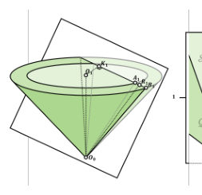
<figcaption class="paper-figure-caption"><b>Fig 1.</b> Figure 1: A two-dimensional section of the high-dimensional quantum- state geometry containing the points O, A, B, and R. Since −−→ OR is a convex combination of −→ OA and −−→ OB, these points lie in a common plane. The higher- dimensional convex geometry can therefore be studied in this plane without changing the geometric relations used below.</figcaption>
</figure>
<figure class="paper-figure-card">
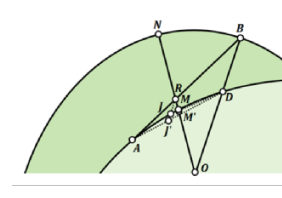
<figcaption class="paper-figure-caption"><b>Fig 2.</b> Figure 2: Geometric construction for the BSA decomposition. The points O, A, B, and R lie in a common two-dimensional subspace. The point A represents the separable component of the BSA, B the entangled component, and R the target state. The points D, M, and N are the intersections of the rays OB and OR with the boundaries of the separable-state and quantum- state sets. The point C belongs to the intersection of the two boundaries within the chosen two-dimensional subspace. The auxiliary points J, J′, and M′ are introduced for the subsequent geometric derivation.</figcaption>
</figure>
</div>
<p><strong>Summary.</strong> This paper develops a geometric measure, the relative entanglement degree $Q(
ho)$, to quantify bipartite entanglement using the convex geometry of quantum states. It applies this framework to the Best Separable Approximation (BSA), deriving rigorous bounds that relate the BSA decomposition weight to the state's geometric position. The results offer a simple, geometric description connecting entanglement, robustness, and the structure of the quantum state space.</p>
<p><strong>Why it may be interesting.</strong> This work provides a powerful, unified geometric framework to quantify entanglement, connecting abstract concepts like the BSA to measurable geometric distances within the state space, which is highly relevant for understanding quantum resource theories.</p>
<details>
<summary>Detailed structure</summary>
<p><strong>Main problem.</strong> The paper investigates bipartite entanglement by analyzing the convex geometry of quantum states and relating this geometric structure to the Best Separable Approximation (BSA).</p>
<p><strong>Main result.</strong> It derives geometric bounds relating the BSA weight ($p_0$) to entanglement measures like the relative entanglement degree $Q(
ho)$, showing that the entangled component of the BSA has an entangled-space size no smaller than the original state's measure.</p>
<p><strong>Method.</strong> The authors employ a geometric approach, defining entanglement measures based on the relative positions of the quantum state boundary and the separable state boundary within the state space, using the maximally mixed state as a reference point.</p>
<p><strong>Model / system.</strong> The analysis focuses on bipartite quantum systems ($    ext{HA} \otimes     ext{HB}$) described by density operators $
ho$. The theory is applied to the two-qubit case, where separability is characterized by the PPT criterion.</p>
<p><strong>Key observables.</strong> Geometric entanglement quantities $G(
ho)$, $Q(
ho)$, and the BSA weight $p_0$.</p>
<p><strong>Important parameters / regimes.</strong> The dimensions of the subsystems ($d_A, d_B$), the entanglement parameters $p$ and $p_0$, and the geometric ratios $L(
ho)$.</p>
<p><strong>Assumptions / limitations.</strong> The analysis assumes the optimality of the BSA decomposition and, for the two-qubit case, relies on the PPT criterion being necessary and sufficient for separability.</p>
<p><strong>Figures summary.</strong> Figure 2 illustrates the geometric construction in a 2D subspace containing key state points (O, A, B, R), defining various geometric relationships.</p>
<p><strong>Paper structure.</strong> The paper introduces geometric quantities based on state space boundaries, applies these to the BSA decomposition, derives general bounds relating the BSA weight to these geometric measures, and finally specializes these results to the two-qubit case using the PPT criterion.</p>
</details>
<details>
<summary>Abstract</summary>
<p>We study bipartite entanglement from the convex geometry of quantum states. Taking the maximally mixed state as a reference point, we define a geometric entangled-space quantity $G(ρ)=[1-L(ρ)]/L(ρ)$ from the relative positions of the separable and quantum-state boundaries, and introduce a relative entanglement degree $Q(ρ)=[(1-p)/p]/G(ρ)$ by comparing it with the robustness relative to the maximally mixed state.   We apply this geometric construction to the Best Separable Approximation (BSA). For the optimal decomposition, we derive the general bound $(1-p)L_B/[p(1-L_B)]\leq p_0\leq Q(ρ)$ and show that the entangled component of the BSA has an entangled-space size no smaller than that of the original mixed state, namely $[1-L_R]/L_R\leq[1-L_B]/L_B$.   For two-qubit states, the BSA entangled component is a pure entangled state. Using the PPT criterion, its geometric parameter can be evaluated explicitly, giving the bound $(1-p)/(2p)\leq p_0\leq Q(ρ)$. These results provide a simple geometric description of the relation between BSA, robustness, and the entangled region of the quantum-state space.</p>
</details>
<p><sub><a href="#top">↑ back to top</a></sub></p>

<p><a id="paper-2608.19985"></a></p>
<h3 id="resonance-raman-spectroscopy-from-ab-initio-hagedorn-wavepacket-dynamics"><a href="http://arxiv.org/abs/2608.19985v1">Resonance Raman spectroscopy from ab initio Hagedorn wavepacket dynamics</a></h3>
<p><strong>Authors:</strong> Davide Barbiero, Léa Zupan, Jiří J. L. Vaníček<br>
<strong>Type:</strong> theory · <strong>Category:</strong> other · <strong>PDF:</strong> <a href="https://arxiv.org/pdf/2608.19985v1">https://arxiv.org/pdf/2608.19985v1</a><br>
<strong>Analysis basis:</strong> full PDF text, analyzed in chunks</p>
<div class="figure-strip-hint">↔ Scroll figures horizontally</div>
<div class="paper-figures-scroll">
<figure class="paper-figure-card">
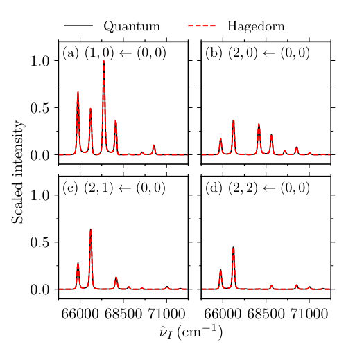
<figcaption class="paper-figure-caption"><b>Fig 1.</b> FIG. 1. Comparison of the resonance Raman excitation pro- files computed using quantum split-operator algorithm and Hagedorn wavepacket dynamics in a displaced, distorted, and Duschinsky-rotated two-dimensional harmonic system. Pro- files for fundamental [panel (a)], first-order overtone [panel (b)], and two combination bands [panels (c) and (d)] are shown.</figcaption>
</figure>
<figure class="paper-figure-card">
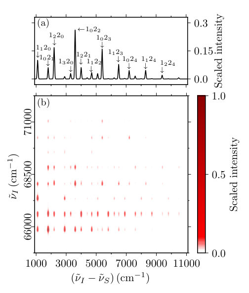
<figcaption class="paper-figure-caption"><b>Fig 2.</b> FIG. 2. Resonance Raman spectra computed using Hage- dorn wavepacket dynamics in a displaced, distorted, and Duschinsky-rotated two-dimensional harmonic system. (a) Resonance Raman spectrum for ˜νI = 68120 cm−1. (b) Two- dimensional resonance Raman spectrum.</figcaption>
</figure>
<figure class="paper-figure-card">
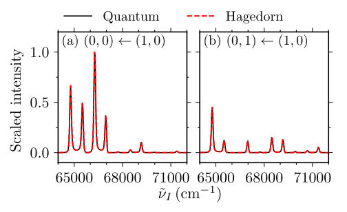
<figcaption class="paper-figure-caption"><b>Fig 3.</b> FIG. 3. Comparison of the resonance Raman excitation pro- files computed using quantum split-operator algorithm and Hagedorn wavepacket dynamics in a displaced, distorted, and Duschinsky-rotated two-dimensional harmonic system. Pro- files for anti-Stokes [panel (a)] and Stokes [panel (b)] hot bands are shown.</figcaption>
</figure>
<figure class="paper-figure-card">
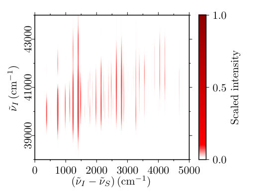
<figcaption class="paper-figure-caption"><b>Fig 4.</b> FIG. 5. Two-dimensional resonance Raman spectrum of an- thracene computed using Hagedorn wavepacket dynamics.</figcaption>
</figure>
<figure class="paper-figure-card">
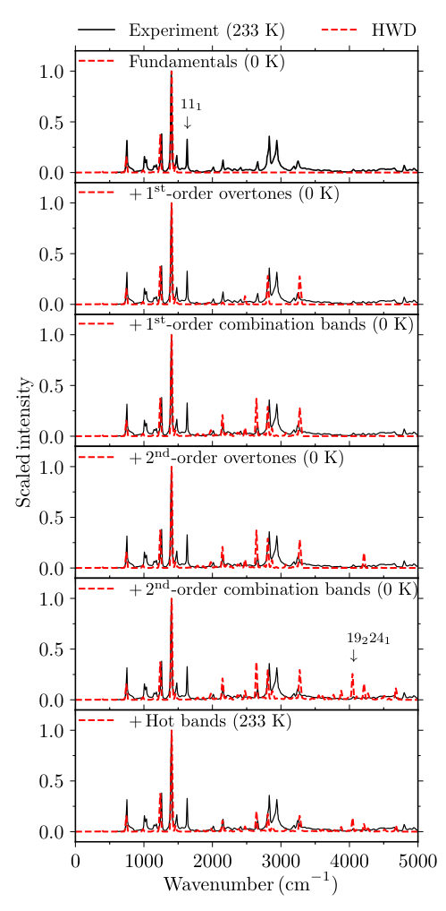
<figcaption class="paper-figure-caption"><b>Fig 5.</b> FIG. 4. Resonance Raman spectrum of anthracene for ˜νI = 43668 cm−1. Spectra computed using Hagedorn wavepacket dynamics (HWD) at 0 K with progressively increasing num- bers of final states (top five panels) and at 233 K (bot- tom panel) are compared to the experimental spectrum at 233 K.40 The simulated spectrum at 233 K was obtained by Boltzmann-averaging the spectra of all initial vibrational states whose excitation energies, measured relative to the zero-point energy, are lower than 2kBT.</figcaption>
</figure>
</div>
<p><strong>Summary.</strong> This paper introduces a novel, efficient ab initio method using Hagedorn wavepackets to simulate Resonance Raman spectra for large molecules like anthracene. By leveraging the exact solvability of Hagedorn functions in harmonic potentials, the authors compute spectra across various vibrational excitation regimes and temperatures. This provides a powerful theoretical tool for interpreting complex molecular spectroscopy.</p>
<p><strong>Why it may be interesting.</strong> This work provides a highly efficient, mathematically rigorous quantum dynamics tool (Hagedorn wavepackets) for calculating complex spectroscopic signals in molecular systems, bridging quantum chemistry calculations with observable spectroscopic data.</p>
<details>
<summary>Detailed structure</summary>
<p><strong>Main problem.</strong> To simulate Resonance Raman (RR) spectra of polyatomic molecules using an ab initio time-dependent method.</p>
<p><strong>Main result.</strong> The Hagedorn wavepacket method successfully computes zero- and finite-temperature RR spectra for anthracene, showing good agreement with experimental data.</p>
<p><strong>Method.</strong> The method uses Hagedorn wavepackets, which are exact solutions to the TDSE for quadratic potentials, to evaluate the RR cross-section via the wavepacket cross-correlation function.</p>
<p><strong>Model / system.</strong> The study focuses on polyatomic molecules, specifically anthracene, whose dynamics are modeled using a 66-dimensional harmonic potential energy surface derived from DFT calculations.</p>
<p><strong>Key observables.</strong> Resonance Raman (RR) spectra (Stokes and anti-Stokes), RR excitation profiles, and the absorption spectrum.</p>
<p><strong>Important parameters / regimes.</strong> Temperature (e.g., 233 K), incident/scattered wavenumbers, and the dimensionality of the potential energy surface (up to 66D).</p>
<p><strong>Assumptions / limitations.</strong> The calculations rely on the electric dipole approximation, Condon approximation, and the harmonic approximation for the potential energy surface, though the method is exact within this approximation.</p>
<p><strong>Figures summary.</strong> Figures compare RR excitation profiles (quantum vs. Hagedorn) in 2D models, and show the computed RR spectrum of anthracene against experimental measurements, including comparisons with solvent effects.</p>
<p><strong>Paper structure.</strong> The paper first validates the Hagedorn method in a simple 2D harmonic model against exact split-operator calculations, then applies the method to compute the full RR spectra of anthracene using DFT-derived potentials, addressing temperature and solvent effects.</p>
</details>
<details>
<summary>Abstract</summary>
<p>We present a practical, ab initio time-dependent method using Hagedorn wavepackets to simulate resonance Raman (RR) spectra of polyatomic molecules. Hagedorn functions---Gaussians multiplied by specific polynomials---are used to represent RR initial and final states because these functions are exact solutions to the time-dependent Schrödinger equation for at-most-quadratic potentials and can be propagated at zero cost beyond that of propagating the guiding Gaussian. Using efficient recursive formulae to compute overlaps between Hagedorn wavepackets, we can evaluate RR excitation profiles for arbitrary spectral signals, such as fundamental, overtone, combination, and hot bands. We then construct the Stokes and anti-Stokes RR spectra from these profiles. We first validate the method in a two-dimensional displaced, distorted, and Duschinsky-rotated harmonic model against numerically exact split-operator calculations. Then, we apply the method to compute RR spectra of anthracene by performing dynamics on a 66-dimensional harmonic potential energy surface constructed from density functional theory calculations.</p>
</details>
<p><sub><a href="#top">↑ back to top</a></sub></p>

<p><a id="paper-2608.19604"></a></p>
<h3 id="universality-of-long-wavelength-behavior-of-composite-fermion-fermi-liquid"><a href="http://arxiv.org/abs/2608.19604v1">Universality of long-wavelength behavior of composite-fermion Fermi liquid</a></h3>
<p><strong>Authors:</strong> Aamir A. Makki, Mytraya Gattu, J. K. Jain<br>
<strong>Type:</strong> theory · <strong>Category:</strong> strongly correlated electrons · <strong>PDF:</strong> <a href="https://arxiv.org/pdf/2608.19604v1">https://arxiv.org/pdf/2608.19604v1</a><br>
<strong>Analysis basis:</strong> full PDF text, analyzed in chunks</p>
<div class="figure-strip-hint">↔ Scroll figures horizontally</div>
<div class="paper-figures-scroll">
<figure class="paper-figure-card">
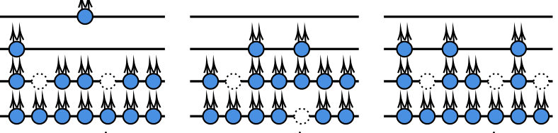
<figcaption class="paper-figure-caption"><b>Fig 1.</b> FIG. 1. Examples of basis functions with CFKE= 3. A single CF exciton with CFKE= 3 is not included as it has L ≥3 and thus does not mix with the L = 0 ground state.</figcaption>
</figure>
<figure class="paper-figure-card">
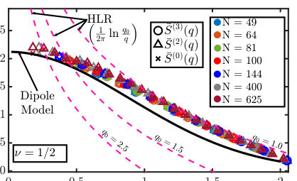
<figcaption class="paper-figure-caption"><b>Fig 2.</b> FIG. 2. Plot of ¯S(q)/q3 where ¯S(q) is the LLL-projected static structure factor. Three different approximations for ¯S(q) are shown for systems up to 625 particles. The static structure factors ¯S(q)(3), ¯S(q)(2) and ¯S(q)(0), calculated with ψ(3) 0 , ψ(2) 0 and ψ(0) 0 , are shown by circles, triangles and crosses, respectively. Each color corresponds to a different system size. For systems with 400 and 625 particles we do not obtain ¯S(q)(3). The difference between ¯S(3)(q), ¯S(2)(q), and ¯S(0)(q) is not appreciable. The magenta dashed lines show the field- theory prediction ¯S(q) = kF</figcaption>
</figure>
<figure class="paper-figure-card">
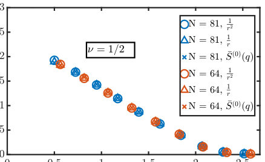
<figcaption class="paper-figure-caption"><b>Fig 3.</b> FIG. 3. ¯S(q)/q3 as a function of q for the ground state of coulomb and 1/r2 interactions at 3KE level (i.e. ¯S(3)(q)) along with the zeroth-order result.</figcaption>
</figure>
<figure class="paper-figure-card">
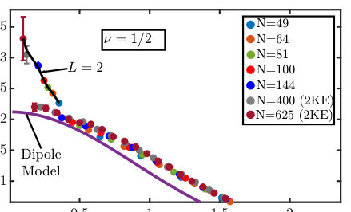
<figcaption class="paper-figure-caption"><b>Fig 4.</b> FIG. 4. LLL-projected static structure factor ¯S(q)/q3 includ- ing the L = 2 data points omitted from Fig. 2. For N ≤144, the results are obtained in the CFKE ≤3 approximation, ¯S(3)(q), whereas for N = 400 and 625 they are obtained in the CFKE ≤2 approximation, ¯S(2)(q). The black line con- nects the points corresponding to L = 2 for different system sizes. These points lie away from, and do not join smoothly onto, the sequence formed by the remaining even-L data with L ≥4, which is approximately coincident with the dipole- model result of Ref. [20]. This isolated anomalous behavior of the L = 2 point motivates its exclusion from the analysis of the smooth thermodynamic sequence.</figcaption>
</figure>
<figure class="paper-figure-card">
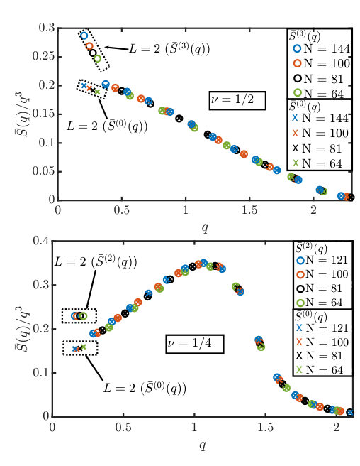
<figcaption class="paper-figure-caption"><b>Fig 5.</b> FIG. 5. Comparison of the LLL-projected static structure fac- tor at zeroth-order, ¯S(0)(q) (crosses) with the α KE corrected one, ¯S(α)(q),(circles) at ν = 1/2 (top, α = 3) and ν = 1/4 (bottom,α = 2). The discontinuity and anomalous behavior of the L = 2 point are more pronounced at ν = 1/4 than at ν = 1/2.</figcaption>
</figure>
</div>
<p><strong>Summary.</strong> This theoretical work examines the static structure factor of a composite-fermion Fermi liquid, aiming to resolve a conflict between theoretical predictions and initial calculations. By refining the underlying wave function approximation, the authors confirm that the small-$q$ behavior of the structure factor is universal and robust across different interaction models. The findings reinforce the theoretical understanding of correlation physics in highly correlated 2D electron systems.</p>
<p><strong>Why it may be interesting.</strong> The investigation into the universal low-momentum behavior of correlation functions in strongly interacting electron systems is fundamental to understanding the nature of fractional quantum Hall states and correlated electron liquids.</p>
<details>
<summary>Detailed structure</summary>
<p><strong>Main problem.</strong> The paper investigates the long-wavelength behavior of the projected static structure factor, $\bar{S}(q)$, for the composite-fermion (CF) liquid, specifically addressing a theoretical discrepancy regarding its $q$-dependence.</p>
<p><strong>Main result.</strong> The authors find that improving the wave function using CF diagonalization does not yield the predicted $\bar{S}(q) \sim q^3 \ln q$ behavior, and the small-$q$ behavior appears universal, suggesting $\bar{S}(q) \propto q^3$ in the limit $q \to 0$.</p>
<p><strong>Method.</strong> The study employs composite-fermion theory combined with variational calculations (CF diagonalization) to systematically improve the ground state wave function approximation.</p>
<p><strong>Model / system.</strong> The system modeled is a composite-fermion (CF) liquid formed by electrons in two dimensions under a high magnetic field, relevant to the fractional quantum Hall effect.</p>
<p><strong>Key observables.</strong> The primary observable is the projected static structure factor, $\bar{S}(q)$, and its small-$q$ asymptotic behavior.</p>
<p><strong>Important parameters / regimes.</strong> The analysis considers various system sizes ($N$) and different interaction forms (Coulomb vs. $1/r^2$).</p>
<p><strong>Assumptions / limitations.</strong> The analysis relies on the Lowest Landau Level (LLL) projection and uses the CF diagonalization method to improve upon a zeroth-order wave function approximation.</p>
<p><strong>Figures summary.</strong> Figures illustrate the convergence of $\bar{S}(q)/q^3$ to a constant value, and highlight an anomaly where the $L=2$ data point deviates significantly from the smooth sequence formed by higher angular momentum sectors ($L \ge 4$).</p>
<p><strong>Paper structure.</strong> The paper progresses by first identifying a theoretical discrepancy in $\bar{S}(q)$'s long-wavelength behavior, then systematically improving the wave function via CF diagonalization, and finally demonstrating the robustness and universality of the resulting small-$q$ behavior while noting an anomaly at $L=2$.</p>
</details>
<details>
<summary>Abstract</summary>
<p>A recent article evaluated the long-wavelength behavior of the projected static structure factor of the composite-fermion (CF) liquid within the zeroth-order microscopic theory and found $\bar{S}(\mathbf{q})\sim q^3$, in disagreement with the $\bar{S}(\mathbf{q})\sim q^3\ln q$ behavior predicted by the Chern-Simons field theory for the Coulomb interaction. Here we consider the possibility that the discrepancy arises because the zeroth-order CF Fermi-liquid wave function used in that work does not properly capture the long wavelength behavior. We use CF diagonalization to significantly improve the wave function but do not find any evidence for $\bar{S}(\mathbf{q})\sim q^3 \ln q$ behavior. Additionally, we find that the small-$q$ behavior of $\bar{S}(\mathbf{q})$ is also insensitive to the form of the interaction between electrons, suggesting universality.</p>
</details>
<p><sub><a href="#top">↑ back to top</a></sub></p>

<p><a id="paper-2608.19532"></a></p>
<h3 id="variational-quantum-circuit-parameterization-of-schnet-a-simulator-based-feasibility-study-for-conservative-molecular-force-fields"><a href="http://arxiv.org/abs/2608.19532v1">Variational Quantum Circuit Parameterization of SchNet: A Simulator-Based Feasibility Study for Conservative Molecular Force Fields</a></h3>
<p><strong>Authors:</strong> Hoang - Anh Nguyen, Nhu - Duc Dinh, Viet - Hung Tran, Tu - Uyen Le Tu, Tien - Lam Pham, Van - Duy Nguyen<br>
<strong>Type:</strong> theory · <strong>Category:</strong> disordered systems and neural networks · <strong>PDF:</strong> <a href="https://arxiv.org/pdf/2608.19532v1">https://arxiv.org/pdf/2608.19532v1</a><br>
<strong>Analysis basis:</strong> full PDF text, analyzed in chunks</p>
<div class="figure-strip-hint">↔ Scroll figures horizontally</div>
<div class="paper-figures-scroll">
<figure class="paper-figure-card">
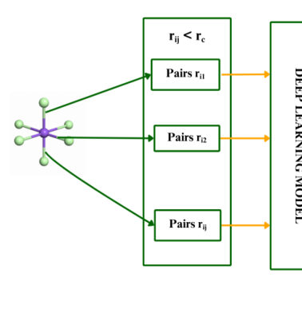
<figcaption class="paper-figure-caption"><b>Fig 1.</b> Figure 1: General formulation of the molecular energy and force prediction problem. An atomistic structure, represented by atomic numbers {Zi} and atomic coordinates {ri}, is mapped to a molecular energy E. Atomic forces are obtained as the negative gradient of the predicted energy with respect to atomic coordinates, Fi = −∇riE, yielding an energy-conserving force field.</figcaption>
</figure>
<figure class="paper-figure-card">
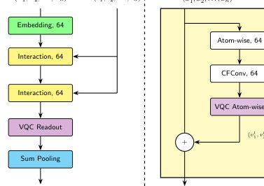
<figcaption class="paper-figure-caption"><b>Fig 2.</b> Figure 2: Overview of the proposed Hybrid Quantum SchNet architecture. Atomic numbers are mapped to atom-wise embeddings, while atomic positions are used to compute interatomic distances and radial basis features. The atom-wise representa- tions are refined through interaction blocks using quantum-generated continuous filters and hybrid VQC atom-wise updates. A hybrid VQC readout maps the final atom- wise representations to atomic energy contributions, which are summed to obtain the predicted molecular energy ˆE. Atomic forces are computed as negative gradients of ˆE with respect to atomic positions.</figcaption>
</figure>
<figure class="paper-figure-card">
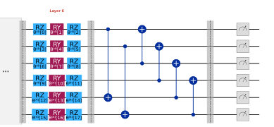
<figcaption class="paper-figure-caption"><b>Fig 3.</b> Figure 3: Variational quantum circuit used in the hybrid quantum modules. Clas- sical input features are projected to a six-dimensional quantum input vector and encoded into six qubits using RY angle encoding. The encoded state is processed by strongly entangling layers composed of parameterized single-qubit Rot gates, where Rot(α, β, γ) = RZ(α)RY (β)RZ(γ), followed by two-qubit entangling gates. The quan- tum output is obtained from Pauli-Z expectation-value measurements over all qubits and mapped to the required output dimension by a classical linear projection.</figcaption>
</figure>
<figure class="paper-figure-card">
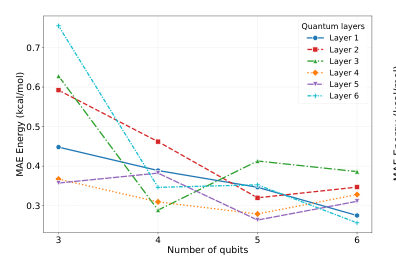
<figcaption class="paper-figure-caption"><b>Fig 4.</b> Figure 4: MAE energy experiments of ethanol for different quantum circuit configu- rations.</figcaption>
</figure>
<figure class="paper-figure-card">
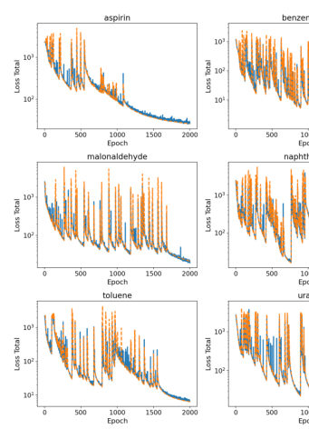
<figcaption class="paper-figure-caption"><b>Fig 5.</b> Figure 5: Training and validation total loss curves for aspirin, benzene, ethanol, and malonaldehyde on the MD17 benchmark. The total loss is plotted on a logarithmic scale as a function of training epoch. The blue solid curves denote the training loss, while the orange dashed curves denote the validation loss.</figcaption>
</figure>
</div>
<p><strong>Summary.</strong> This paper proposes a Hybrid Quantum SchNet to accelerate molecular simulations by embedding Variational Quantum Circuits into the SchNet force field framework. By training the model using both energy and force data jointly, the authors demonstrate substantial improvements in prediction accuracy. This work establishes the feasibility of using quantum circuits to enhance the learning of physically constrained, energy-conserving potentials.</p>
<p><strong>Why it may be interesting.</strong> This work directly bridges quantum machine learning (VQCs) with condensed matter simulation techniques (force fields), offering a novel, quantum-enhanced approach to modeling interatomic interactions and potential energy surfaces.</p>
<details>
<summary>Detailed structure</summary>
<p><strong>Main problem.</strong> The challenge is to create machine-learning force fields that are both accurate for molecular simulation and rigorously energy-conserving, especially when incorporating quantum machine learning components.</p>
<p><strong>Main result.</strong> The hybrid quantum architecture successfully integrates Variational Quantum Circuits (VQCs) into the SchNet framework, showing that joint energy and force supervision significantly improves prediction accuracy over energy-only training.</p>
<p><strong>Method.</strong> The authors propose a Hybrid Quantum SchNet by embedding VQCs into the SchNet's filter generation, atom-wise update, and readout stages, allowing quantum feature mapping while maintaining force-gradient consistency.</p>
<p><strong>Model / system.</strong> The model is applied to molecular systems benchmarked on the MD17 dataset. It uses the SchNet architecture, which relies on continuous-filter convolutions based on interatomic distances, augmented by VQC modules.</p>
<p><strong>Key observables.</strong> Energy Mean Absolute Error (MAE) and Force Mean Absolute Error (MAE) are the primary diagnostics, with significant quantitative improvements reported upon joint supervision.</p>
<p><strong>Important parameters / regimes.</strong> The performance depends on the balance between quantum circuit width, circuit depth, and the optimization stability, suggesting a complex hyperparameter trade-off.</p>
<p><strong>Assumptions / limitations.</strong> The study is framed as a feasibility study, and the performance gains are relative to classical SchNet baselines, not necessarily state-of-the-art potentials.</p>
<p><strong>Figures summary.</strong> Figures illustrate the general formulation of force derivation from energy, the detailed VQC structure (encoding, ansatz, measurement), and ablation studies showing performance dependence on circuit size.</p>
<p><strong>Paper structure.</strong> The paper introduces the need for energy-conserving ML force fields, details the Hybrid Quantum SchNet architecture by specifying VQC integration points, presents results comparing energy-only vs. joint supervision, and concludes with ablation studies on circuit parameters.</p>
</details>
<details>
<summary>Abstract</summary>
<p>Machine-learning force fields provide a promising route for accelerating molecular simulation by replacing expensive quantum-chemical calculations with differentiable models of molecular energies and atomic forces. However, learning accurate and energy-conserving forces remains challenging, especially when the model must capture both global energy trends and local potential-energy gradients from limited data. In this work, we propose a Hybrid Quantum SchNet architecture that integrates variational quantum circuit modules into the continuous-filter SchNet framework. Quantum modules are inserted into the filter generator, atom-wise update, and readout transformations, allowing quantum-enhanced feature mappings to contribute to distance-dependent interactions and atomic energy prediction while preserving the energy-gradient formulation of forces. The model is evaluated on eight MD17 molecular systems using 1000 training configurations per molecule. Compared with energy-only training, joint energy--force supervision substantially improves both energy and force prediction accuracy. Compared with energy-only training, joint energy--force supervision substantially improves both energy and force prediction accuracy. Averaged over the benchmark, the energy MAE decreases from 2.567 to 0.593 kcal mol$^{-1}$, while the force MAE decreases from 16.340 to 1.540 kcal mol$^{-1}$ Å$^{-1}$. Ablation experiments on ethanol further show that the performance of the hybrid model depends on the balance between quantum circuit width, circuit depth, and optimization stability. These results demonstrate that variational quantum circuits can be incorporated into neural force-field architectures and trained end-to-end to improve molecular energy and force prediction.</p>
</details>
<p><sub><a href="#top">↑ back to top</a></sub></p>

<p><a id="paper-2608.19655"></a></p>
<h3 id="variational-quantum-linear-solver-via-block-encoding-for-the-poisson-equation"><a href="http://arxiv.org/abs/2608.19655v1">Variational Quantum Linear Solver via Block Encoding for the Poisson Equation</a></h3>
<p><strong>Authors:</strong> Viraj Dsouza, Ayush Singhal, Alex Khan, Rut Lineswala, Abhishek Chopra<br>
<strong>Type:</strong> both · <strong>Category:</strong> quantum information and computing · <strong>PDF:</strong> <a href="https://arxiv.org/pdf/2608.19655v1">https://arxiv.org/pdf/2608.19655v1</a><br>
<strong>Analysis basis:</strong> full PDF text, analyzed in chunks</p>
<div class="figure-strip-hint">↔ Scroll figures horizontally</div>
<div class="paper-figures-scroll">
<figure class="paper-figure-card">
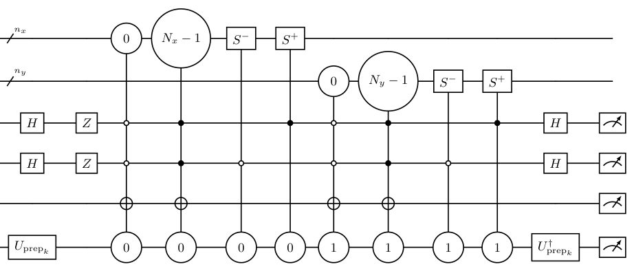
<figcaption class="paper-figure-caption"><b>Fig 1.</b> FIG. 1: Block encoding circuit for the 2D Laplacian with Dirichlet boundary conditions along both spatial directions, following the construction of [21]. Post-selecting all four ancilla qubits on |0⟩⊗4 realises the action of eA on the system register.</figcaption>
</figure>
<figure class="paper-figure-card">
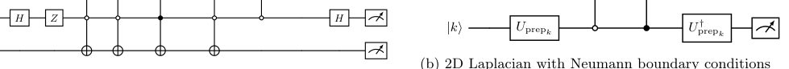
<figcaption class="paper-figure-caption"><b>Fig 2.</b> FIG. 2: Block-encoding circuits for the Laplacian with Neumann boundary conditions [21]. In (b), UN 1 and U N 2 denote the sub-circuit of (a) applied to the x- and y-registers. Post-selecting all four ancilla qubits on |0⟩⊗4 realises the action of eAN.</figcaption>
</figure>
<figure class="paper-figure-card">
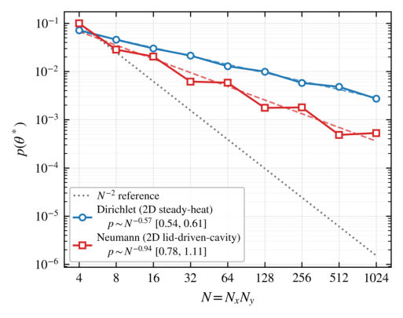
<figcaption class="paper-figure-caption"><b>Fig 3.</b> FIG. 5: Performance and numerical exactness of the block-encoding circuits used in this work.</figcaption>
</figure>
<figure class="paper-figure-card">
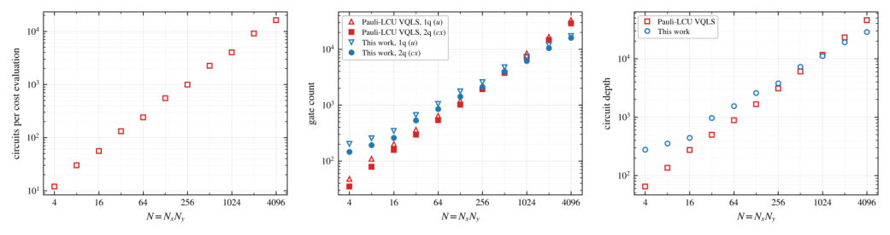
<figcaption class="paper-figure-caption"><b>Fig 4.</b> FIG. 6: Resource comparison between the Pauli-LCU VQLS and the block-encoded formulation of this work, for the 2D Dirichlet Laplacian. (a) The block-encoded formulation requires one circuit at every size and is therefore not plotted. (b), (c) Per-circuit counts after transpilation to the {U, CX} basis; for the Pauli-LCU formulation these are for the most expensive Hadamard-test circuit at each grid, an empirical per-circuit upper bound.</figcaption>
</figure>
<figure class="paper-figure-card">
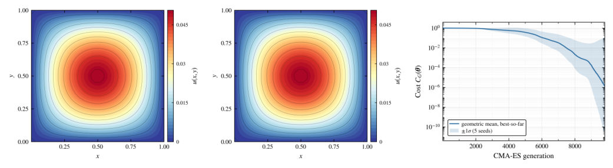
<figcaption class="paper-figure-caption"><b>Fig 5.</b> FIG. 7: Sinusoidal source benchmark on the 32 × 32 grid (N = 1024, n = 10 system qubits, 14 total), CMA-ES with σ0 = 0.3 and ℓ= 5 ansatz layers. Panels (a) and (b) share a colour scale and show the seed attaining the median infidelity of the five runs, 1 −F = 8.9 × 10−16. In (c) the solid line is the geometric mean of the best-so-far cost across seeds and the band is ±1 standard deviation in log10; the median seed reaches CG = 4.7 × 10−15.</figcaption>
</figure>
</div>
<p><strong>Summary.</strong> This paper presents an improved Variational Quantum Linear Solver (VQLS) for solving the Poisson equation by introducing an exact block encoding of the discrete Laplacian. This encoding reduces the required quantum circuit depth from $O(L^2)$ to $O(1)$ for cost evaluation. The solver is successfully benchmarked on multiple physical problems, demonstrating superior performance and trainability compared to existing quantum linear solvers.</p>
<p><strong>Why it may be interesting.</strong> The work directly tackles the resource scaling of quantum algorithms for PDEs, offering a concrete, improved quantum circuit implementation for a fundamental problem in physics.</p>
<details>
<summary>Detailed structure</summary>
<p><strong>Main problem.</strong> The paper addresses the challenge of solving large linear systems, particularly those arising from the discretization of the Poisson equation, using quantum computation.</p>
<p><strong>Main result.</strong> A novel block encoding for the discrete Laplacian allows the Variational Quantum Linear Solver (VQLS) to evaluate the cost function using only a single quantum circuit, significantly improving circuit complexity over prior methods.</p>
<p><strong>Method.</strong> The authors employ a VQLS framework, mapping the linear system $Ax=b$ to a variational optimization problem, and utilize an exact block encoding to represent the Laplacian operator.</p>
<p><strong>Model / system.</strong> The primary model is the 2D Poisson equation ($
abla^2 u = f$), discretized using finite differences, leading to a system matrix $A$ with a separable Kronecker-sum structure. Benchmarks include sinusoidal forcing, Gaussian heat sources, and the pressure-Poisson equation for lid-driven cavity flow.</p>
<p><strong>Key observables.</strong> Infidelity ($1-F$) against classical solutions, cost function convergence ($C_G$), and the circuit count required per cost evaluation.</p>
<p><strong>Important parameters / regimes.</strong> Grid size ($N$ up to 1024), optimization parameters (e.g., CMA-ES settings), and boundary conditions (Dirichlet, Neumann).</p>
<p><strong>Assumptions / limitations.</strong> The analysis relies on exact statevector simulation, and the method assumes the block encoding can efficiently represent the required operators.</p>
<p><strong>Figures summary.</strong> Figures illustrate the block encoding circuits for Dirichlet and Neumann conditions, and compare the convergence of CMA-ES versus COBYLA optimizers on various benchmarks.</p>
<p><strong>Paper structure.</strong> The paper introduces the VQLS for PDEs, details the novel block encoding technique for the Laplacian, benchmarks the solver on three physical problems (sinusoidal, Gaussian, lid-driven cavity), and compares optimization performance.</p>
</details>
<details>
<summary>Abstract</summary>
<p>We present a variational quantum linear solver (VQLS) for the Poisson equation built on an exact block encoding of the discrete Laplacian, and demonstrate its performance on physically motivated benchmarks. Unlike LCU-based VQLS where the number of distinct circuits required per cost-function evaluation is $\mathcal{O}(L^2)$, where $L$ is the number of terms in the LCU decomposition of the discrete Laplacian operator, this approach requires only a single circuit for cost evaluation. We further empirically demonstrate that the choice of classical optimizer materially affects where the variational optimization ceases to make progress. The solver is benchmarked on three problems: a Poisson equation with sinusoidal forcing and a steady-state heat conduction problem with a localized Gaussian source, both with Dirichlet boundaries, and the pressure-Poisson equation of a two-dimensional lid-driven cavity flow, in which the solver is invoked once per time step under Neumann boundary conditions.</p>
</details>
<p><sub><a href="#top">↑ back to top</a></sub></p>
</details>
<h2 id="secondary-cond-mat-archives">Secondary cond-mat archives</h2>
<p><em>Papers from cond-mat.mtrl-sci, mes-hall, other, soft, supr-con. These archives are de-prioritized — they appear at the end regardless of relevance score.</em></p>
<h3 id="relevant-in-secondary-archives-14">Relevant in secondary archives (14)</h3>

<p><a id="paper-2608.19681"></a></p>
<h3 id="cavity-enhanced-activation-of-radiatively-suppressed-light-hole-exciton-emission-in-colloidal-nanoplatelets"><a href="http://arxiv.org/abs/2608.19681v1">Cavity-Enhanced Activation of Radiatively Suppressed Light-Hole Exciton Emission in Colloidal Nanoplatelets</a></h3>
<p><strong>Authors:</strong> Komal Sharma, Riya Dutta, Prathmesh Deshmukh, Vinod M. Menon, Jaydeep K. Basu<br>
<strong>Type:</strong> experiment · <strong>Category:</strong> other · <strong>PDF:</strong> <a href="https://arxiv.org/pdf/2608.19681v1">https://arxiv.org/pdf/2608.19681v1</a><br>
<strong>Analysis basis:</strong> full PDF text, analyzed in chunks
<strong>Topic relevance:</strong> 🔥 <code>quantum optics experiment</code> <strong>4/5</strong> · <code>Tavis-Cummings &amp; cavity-many-emitter</code> <strong>3/5</strong> · <code>interference shaping light</code> <strong>3/5</strong> · <code>Dicke superradiance</code> <strong>2/5</strong> · <code>analog quantum simulation</code> <strong>2/5</strong> · <code>correlated / nonlocal dissipation</code> <strong>2/5</strong> · <code>driven-dissipative phase transition</code> <strong>2/5</strong> · <code>methods for driven-dissipative</code> <strong>1/5</strong> · <code>superradiant laser</code> <strong>1/5</strong></p>
<div class="figure-strip-hint">↔ Scroll figures horizontally</div>
<div class="paper-figures-scroll">
<figure class="paper-figure-card">
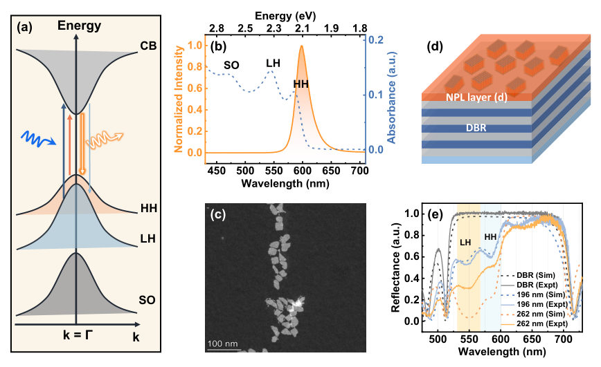
<figcaption class="paper-figure-caption"><b>Fig 1.</b> Figure 1: (a) Schematic band diagram of a nanoplatelet (NPL), showing allowed optical transitions from the conduction band (CB) to the heavy-hole (HH), light-hole (LH), and split-off (SO) valence bands at the Brillouin-zone center. While both HH and LH transitions are optically allowed, ra- diative emission from the LH state is strongly suppressed due to its higher energy and weaker oscillator strength. (b) Normalized photoluminescence (PL) and absorbance spectra of CdSe/CdS core/shell NPLs, showing strong absorption signatures for both HH and LH transitions, but emis- sion exclusively from the HH exciton. (c) Transmission electron microscopy image of NPLs with a scale bar of 100 nm. (d)...</figcaption>
</figure>
<figure class="paper-figure-card">

<figcaption class="paper-figure-caption"><b>Fig 2.</b> Figure 1e compares simulated and experimental reflectance spectra for DBR substrates coated</figcaption>
</figure>
<figure class="paper-figure-card">
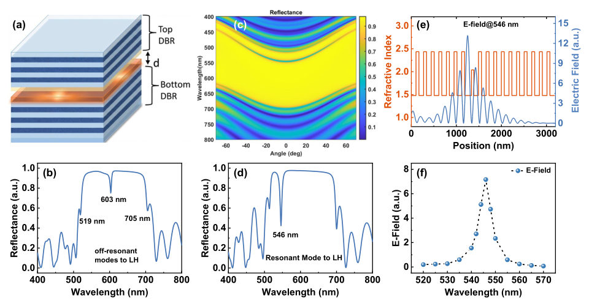
<figcaption class="paper-figure-caption"><b>Fig 3.</b> Figure 2: (a) Illustration of the proposed DBR–NPL–DBR cavity structure, designed to spectrally align a cavity mode with the LH exciton. (b) Simulated normal-incidence reflectance spectrum for an initial cavity configuration with an NPL thickness of 262 nm, showing cavity modes at 519, 603, and 705 nm, none of which overlap with the LH exciton. (c) Simulated angle-resolved reflectance spectrum of the optimized cavity structure, revealing a dispersive cavity mode centered near 546 nm that coincides spectrally with the LH exciton. (d) Reflectance profile at normal incidence (0°) confirming a sharp dip at 546 nm, corresponding to the designed resonant cavity. (e) Simulated refractive index...</figcaption>
</figure>
<figure class="paper-figure-card">
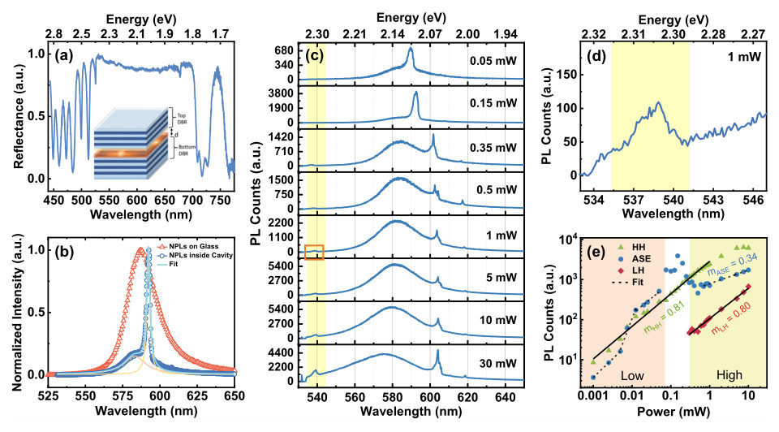
<figcaption class="paper-figure-caption"><b>Fig 4.</b> Figure 3: (a) White light reflectance spectrum from the vertical DBR–NPL–DBR cavity geometry, exhibiting no resonant mode to LH. (b) Normalized PL spectra of CdSe/CdS NPLs on glass (red) and embedded inside the DBR cavity (blue), showing significant spectral narrowing and amplifi- cation inside the cavity. (c) Power-dependent PL spectra measured from the cavity, showing the progressive emergence of ASE followed by a distinct high-energy peak at the LH exciton energy (shaded). The LH emission is absent at low powers and becomes prominent only beyond a thresh- old pump fluence. (d) Zoomed-in view of the high-energy spectral region at 1 mW excitation, confirming a weak but discernible LH...</figcaption>
</figure>
<figure class="paper-figure-card">

<figcaption class="paper-figure-caption"><b>Fig 5.</b> Figure 3a shows the white-light reflectance spectrum of this detuned cavity, confirming the absence</figcaption>
</figure>
</div>

<p><strong>Summary.</strong> This research presents an all-photonic method to overcome the natural radiative suppression of Light-Hole (LH) exciton emission in colloidal nanoplatelets. By integrating the NPLs into a DBR cavity and tuning the cavity mode to spectrally match the LH exciton, the authors successfully activated and observed the LH emission channel. This establishes cavity engineering as a general, tunable platform for accessing otherwise inaccessible quantum optical states.</p>
<p><strong>Why it may be interesting.</strong> This work directly addresses cavity quantum electrodynamics (cQED) principles by using engineered photonic structures (DBR cavities) to overcome intrinsic material limitations (radiative suppression) and selectively enhance emission from a specific quantum state (LH exciton).</p>
<details>
<summary>Detailed structure</summary>
<p><strong>Main problem.</strong> The primary challenge is activating the radiative emission from Light-Hole (LH) excitons in colloidal nanoplatelets, as this emission is typically suppressed due to energetic unfavorability.</p>
<p><strong>Main result.</strong> The authors successfully demonstrated that coupling the NPLs into a DBR cavity, and achieving spectral resonance with the LH exciton, is a general photonic route to activate this otherwise suppressed emission.</p>
<p><strong>Method.</strong> The study combines optical characterization (PL, reflectance) with cavity engineering, using temperature-dependent and polarization-resolved measurements to distinguish emission channels.</p>
<p><strong>Model / system.</strong> The system involves colloidal CdSe-CdS nanoplatelets (NPLs) integrated into a Distributed Bragg Reflector (DBR) cavity structure, forming an open or closed photonic environment.</p>
<p><strong>Key observables.</strong> Cavity-coupled PL spectra, temperature-dependent PL intensity, Degree of Polarization (DOP), and spectral alignment relative to the LH exciton resonance.</p>
<p><strong>Important parameters / regimes.</strong> Cavity quality factor (Q), spectral detuning, temperature (e.g., 75 K to 300 K), and NPL layer thickness.</p>
<p><strong>Assumptions / limitations.</strong> The enhancement mechanism is attributed to the coupling between the excitonic transition and the cavity photon mode, requiring both spectral resonance and sufficient intrinsic absorption strength.</p>
<p><strong>Figures summary.</strong> Figures illustrate the design process, comparing reflectance spectra in open vs. closed cavities, and show PL spectra demonstrating the emergence of the LH peak upon achieving spectral resonance and temperature variation.</p>
<p><strong>Paper structure.</strong> The paper progresses from establishing the intrinsic difficulty of LH emission, to demonstrating that field enhancement alone is insufficient, and finally proving that achieving spectral resonance within a closed DBR cavity is necessary and sufficient to activate the LH radiative pathway.</p>
</details>
<details>
<summary>Abstract</summary>
<p>Light-hole (LH) excitons provide access to well-defined polarization and spin degrees of freedom that are central to quantum photonics and chiral light-matter interactions. Achieving LH emission is challenging because LH states are energetically unfavoured and typically relax non-radiatively. Existing strategies to access LH excitons rely on modifying the electronic band structure through strain, shape anisotropy, or piezoelectric fields, approaches that are material-specific and offer limited post-synthesis tunability. Here we demonstrate an all-photonic route to activate LH exciton emission in colloidal CdSe-CdS nanoplatelets (NPLs) using a distributed Bragg reflector (DBR) cavity, without altering the underlying band structure. In the absence of a cavity mode, the system exhibits amplified spontaneous emission from heavy-hole (HH) states without detectable LH emission at low excitation powers. By spectrally matching a cavity resonance to the LH exciton, cavity-coupled LH emission emerges at significantly lower excitation powers. Temperature-dependent spectroscopy reveals reversible switching between LH- and HH-coupled emission through exciton-cavity detuning, while polarization-resolved and spectrally resolved time-resolved photoluminescence measurements provide independent evidence distinguishing the cavity-coupled LH and HH emission channels. These findings establish cavity engineering as a general materials-level approach for accessing radiatively suppressed optical states.</p>
</details>
<p><sub><a href="#top">↑ back to top</a></sub></p>

<p><a id="paper-2608.19696"></a></p>
<h3 id="coherence-protection-of-a-silicon-hole-spin-qubit-with-phase-modulated-microwave-driving"><a href="http://arxiv.org/abs/2608.19696v1">Coherence protection of a silicon hole spin qubit with phase-modulated microwave driving</a></h3>
<p><strong>Authors:</strong> Sayyid I. Ibad, Yusuke Sato, Takuma Kuno, Itaru Yanagi, Toshiyuki Mine, Ryuta Tsuchiya, Digh Hisamoto, Hiroyuki Mizuno, Raisei Mizokuchi, Jun Yoneda, Tetsuo Kodera<br>
<strong>Type:</strong> both · <strong>Category:</strong> quantum information and computing · <strong>PDF:</strong> <a href="https://arxiv.org/pdf/2608.19696v1">https://arxiv.org/pdf/2608.19696v1</a><br>
<strong>Analysis basis:</strong> full PDF text, analyzed in chunks
<strong>Topic relevance:</strong> 🔥 <code>QC/QI experiment</code> <strong>4/5</strong> · <code>quantum measurements</code> <strong>2/5</strong></p>
<div class="figure-strip-hint">↔ Scroll figures horizontally</div>
<div class="paper-figures-scroll">
<figure class="paper-figure-card">
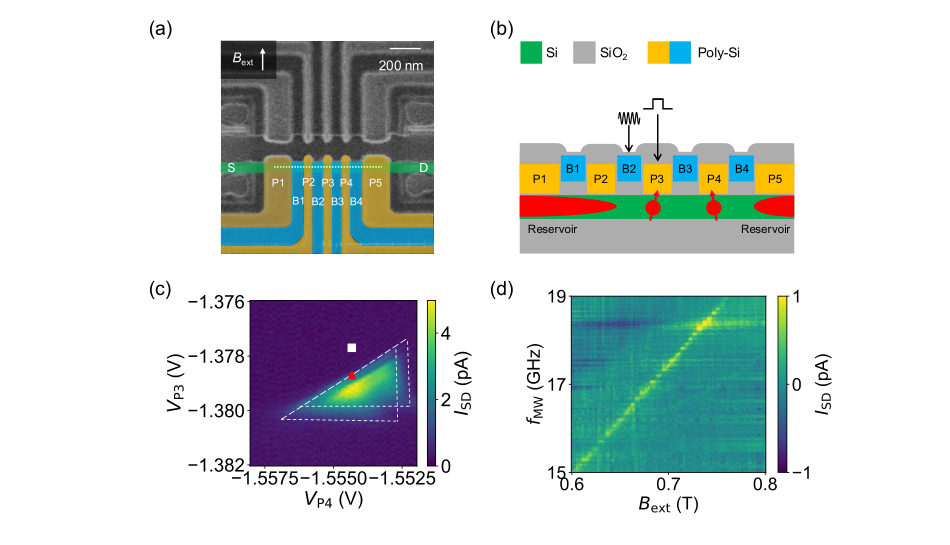
<figcaption class="paper-figure-caption"><b>Fig 1.</b> Figure 1. Device setup, PSB and EDSR. (a) False-colored scanning electron micrograph of the</figcaption>
</figure>
<figure class="paper-figure-card">
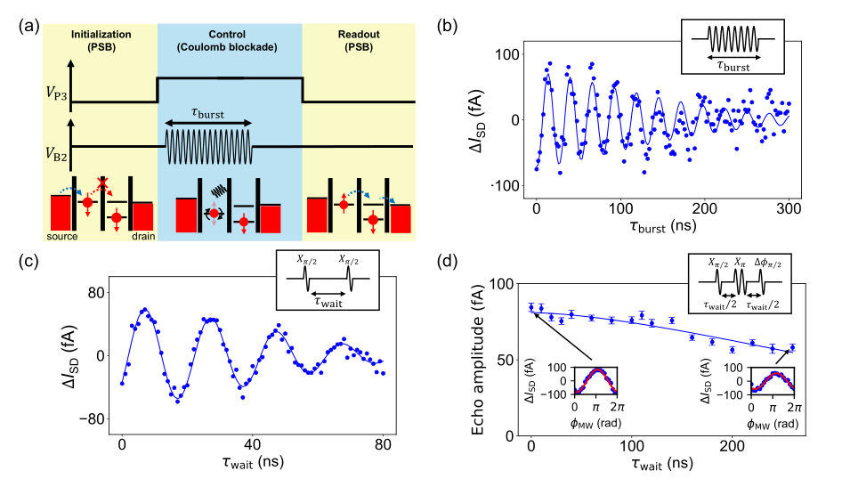
<figcaption class="paper-figure-caption"><b>Fig 2.</b> Figure 2. Coherent control of a single-hole spin. (a) Schematic of the pulse scheme for coherent</figcaption>
</figure>
<figure class="paper-figure-card">
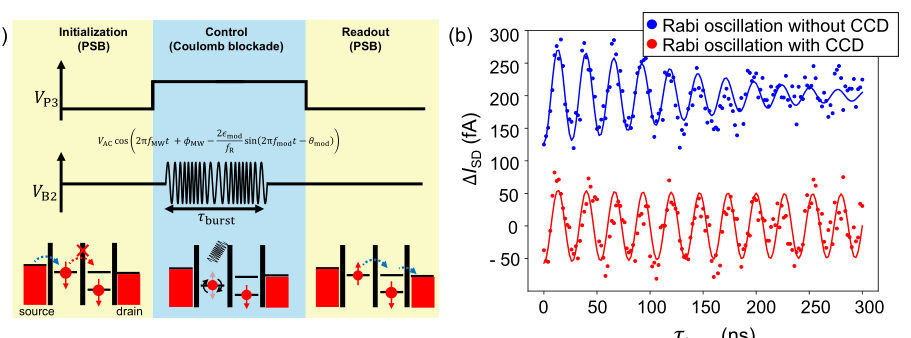
<figcaption class="paper-figure-caption"><b>Fig 3.</b> Figure 3. Rabi experiments using the phase-modulated CCD technique. (a) Schematic of the</figcaption>
</figure>
<figure class="paper-figure-card">
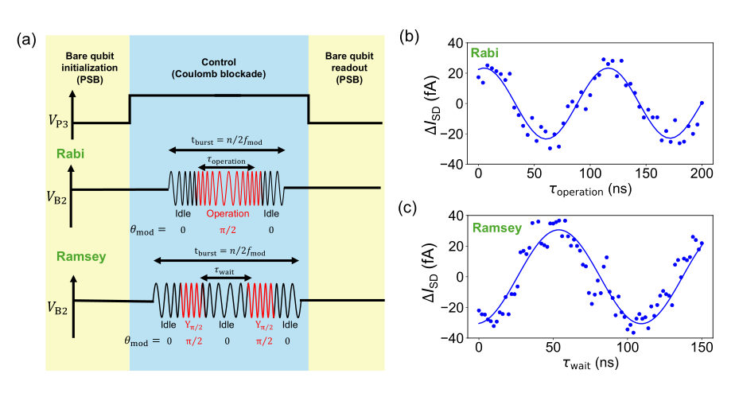
<figcaption class="paper-figure-caption"><b>Fig 4.</b> Figure 4. Control of CCD-dressed qubits. (a) Pulse schemes for Rabi, Ramsey, and two-axis</figcaption>
</figure>
</div>

<p><strong>Summary.</strong> This paper addresses the decoherence challenge in silicon hole spin qubits by introducing a phase-modulated concatenated continuous driving (CCD) technique. By analyzing the system's response to noise through derived filter functions, the authors demonstrate that the CCD protocol effectively suppresses low-frequency noise. This results in significantly extended coherence times, marking a viable path toward building robust quantum processors.</p>
<p><strong>Why it may be interesting.</strong> This work provides a concrete, experimentally verifiable protocol (CCD) to engineer noise resilience into solid-state qubits, which is a critical challenge for scaling quantum computation platforms.</p>
<details>
<summary>Detailed structure</summary>
<p><strong>Main problem.</strong> Hole spins in silicon quantum dots suffer from low-frequency noise (charge and hyperfine) that limits coherence times, despite the platform's promise for fast, all-electrical quantum control.</p>
<p><strong>Main result.</strong> Implementing a phase-modulated concatenated continuous driving (CCD) protocol successfully suppresses low-frequency noise, leading to measurable improvements in coherence times ($T_2$) and demonstrating noise-robust gate operations.</p>
<p><strong>Method.</strong> The authors combine experimental characterization (Rabi/Ramsey measurements) with advanced theoretical analysis, deriving filter functions to quantify noise susceptibility under the CCD driving scheme.</p>
<p><strong>Model / system.</strong> The system is a hole spin qubit in silicon quantum dots, modeled using Hamiltonians that incorporate strong spin-orbit coupling (SOC) and subjected to phase-modulated microwave driving fields.</p>
<p><strong>Key observables.</strong> Rabi oscillation decay time ($T_2^R$), Ramsey coherence time ($T_2^*$), and the coherence time achieved using the CCD protocol ($T_2^{R-CCD} \geq 300$ ns).</p>
<p><strong>Important parameters / regimes.</strong> Low-frequency noise spectral density, modulation frequency ($f_{	ext{mod}}$), modulation amplitude ($\epsilon_{	ext{mod}}$), and the effective detuning ($\delta_L$).</p>
<p><strong>Assumptions / limitations.</strong> The analysis relies on the Rotating-Wave Approximation (RWA) and assumes that the CCD protocol effectively shifts the qubit's sensitivity away from the dominant low-frequency noise sources.</p>
<p><strong>Figures summary.</strong> Figures compare Rabi pulse sequences with and without CCD modulation, and show Rabi/Ramsey oscillation decay curves for the dressed qubit, confirming coherence protection.</p>
<p><strong>Paper structure.</strong> The paper progresses from identifying coherence limitations using standard measurements to proposing the CCD technique, deriving the necessary theoretical framework (Hamiltonians and filter functions), and finally presenting results showing noise suppression and coherent control in the dressed qubit frame.</p>
</details>
<details>
<summary>Abstract</summary>
<p>Hole spins in silicon quantum dots are a promising platform for quantum computing due to their strong intrinsic spin-orbit coupling (SOC), which enables fast, all-electrical control. However, this coupling also increases their susceptibility to charge noise, thereby limiting coherence times. Moreover, holes in silicon are also affected by hyperfine interactions with residual nuclear spins in the silicon substrate, introducing a non-negligible source of low-frequency noise. Here, we implement a phase-modulated concatenated continuous driving (CCD) technique for hole spin qubits to suppress low-frequency noise through microwave phase modulation. This approach stabilizes Rabi oscillations and extends the oscillation decay time compared to the conventional method. Furthermore, by defining a qubit in the CCD frame, we achieve coherent control while simultaneously protecting the qubit from noise, confirming coherence protection during gate operations. These results demonstrate a viable route toward noise-robust hole spin qubits.</p>
</details>
<p><sub><a href="#top">↑ back to top</a></sub></p>

<p><a id="paper-2608.19712"></a></p>
<h3 id="internal-cyclotron-probe-of-the-vertical-polarizability-of-a-surface-state-electron-on-helium"><a href="http://arxiv.org/abs/2608.19712v1">Internal cyclotron probe of the vertical polarizability of a surface-state electron on helium</a></h3>
<p><strong>Authors:</strong> Kirill Shulga<br>
<strong>Type:</strong> theory · <strong>Category:</strong> other · <strong>PDF:</strong> <a href="https://arxiv.org/pdf/2608.19712v1">https://arxiv.org/pdf/2608.19712v1</a><br>
<strong>Analysis basis:</strong> full PDF text, analyzed in chunks
<strong>Topic relevance:</strong> <code>analog quantum simulation</code> <strong>3/5</strong> · <code>Tavis-Cummings &amp; cavity-many-emitter</code> <strong>2/5</strong> · <code>Keldysh / 2PI / non-Gaussian methods</code> <strong>1/5</strong> · <code>quantum measurements</code> <strong>1/5</strong></p>
<div class="figure-strip-hint">↔ Scroll figures horizontally</div>
<div class="paper-figures-scroll">
<figure class="paper-figure-card">
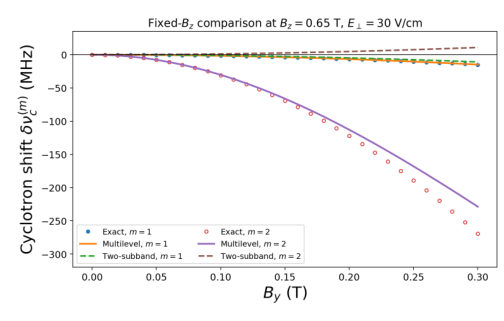
<figcaption class="paper-figure-caption"><b>Fig 1.</b> FIG. 1. Cyclotron-branch shifts at fixed Bz = 0.65 T and E⊥= 30 V/cm as a function of the in-plane field By. For these parameters ν21 = 140.2 GHz at By = 0. Symbols show exact diagonalization of the microscopic Hamiltonian. Solid lines show the multilevel second-order theory of Eqs. (14) and (15). Dashed lines show the strict two-subband limit. The ground-state branch is described reasonably well by the two- subband reduction, whereas the first-excited branch departs strongly from it while remaining well captured by the multi- level theory.</figcaption>
</figure>
<figure class="paper-figure-card">
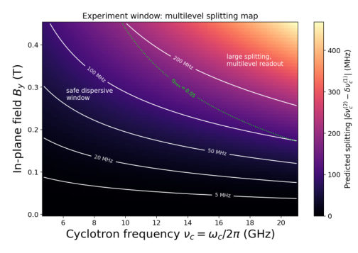
<figcaption class="paper-figure-caption"><b>Fig 2.</b> FIG. 2. Predicted multilevel cyclotron splitting in the ex- perimentally relevant microwave window. The horizontal axis is the bare cyclotron frequency νc = ωc/2π and the vertical axis is the in-plane field By. The color scale gives the split- ting |δν(2) c −δν(1) c | obtained from the multilevel second-order theory for fixed E⊥= 30 V/cm in 4He, corresponding to ν21 = 140.2 GHz at By = 0. The white contours mark 5, 20, 50, 100, and 200 MHz. The dotted contour marks the conser- vative dispersive boundary ηmax = 0.05, based on Eq. (11).</figcaption>
</figure>
<figure class="paper-figure-card">
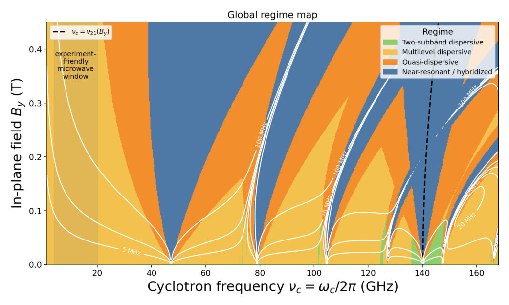
<figcaption class="paper-figure-caption"><b>Fig 3.</b> FIG. 3. Global regime map of the tilted-field Hamiltonian for 4He at fixed E⊥= 30 V/cm. The horizontal axis is the bare cyclotron frequency νc = ωc/2π and the vertical axis is the in-plane field By. The shaded strip indicates the 4-20 GHz microwave window. The dashed black curve marks the condition νc = ν21(By), where the cyclotron frequency matches the lowest vertical transition. White contours show multilevel splittings of 5, 20, and 100 MHz. The green sector corresponds to a strict two-subband dispersive regime. The yellow sector remains dispersive but is already intrinsically multilevel. The orange sector is a quasi-dispersive crossover regime, and the blue sector corresponds to...</figcaption>
</figure>
<figure class="paper-figure-card">
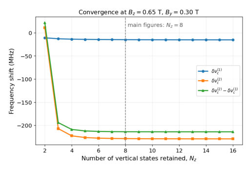
<figcaption class="paper-figure-caption"><b>Fig 4.</b> FIG. 4. Convergence of the multilevel dispersive shifts with the number of vertical states retained in Eq. (10), evaluated at Bz = 0.65 T, By = 0.30 T, and E⊥= 30 V/cm. The vertical dashed line marks Nz = 8, the cutoff used for the main figures. The rightmost points show the values obtained at Nz = 16. Increasing the cutoff from Nz = 8 to Nz = 16 changes the individual branch shifts by less than 0.6 MHz and the differential splitting by less than 0.2 MHz.</figcaption>
</figure>
<figure class="paper-figure-card">
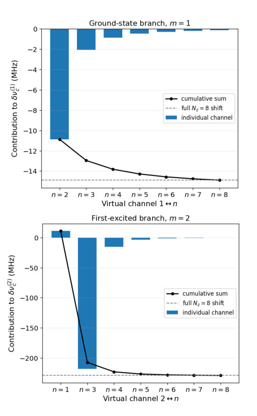
<figcaption class="paper-figure-caption"><b>Fig 5.</b> FIG. 5. Channel-resolved decomposition of the multilevel cyclotron shifts at Bz = 0.65 T, By = 0.30 T, and E⊥= 30 V/cm. Bars show individual virtual-channel contributions to Eqs. (14) and (15); black markers show cumulative par- tial sums. Top: ground-state branch. Bottom: first-excited branch.</figcaption>
</figure>
</div>

<p><strong>Summary.</strong> This paper theoretically analyzes the cyclotron resonance of an electron on liquid helium in a tilted magnetic field. The resonance shift is shown to act as a direct probe for the vertical polarizability of the electron's Rydberg-like subbands. By developing a full multilevel Hamiltonian and comparing it to simplified models, the authors map out the physical regimes where different theoretical approximations are valid.</p>
<p><strong>Why it may be interesting.</strong> This work models a complex, interacting quantum system (electron-helium interface) using concepts from cavity QED (resonance probing) and many-body physics (multilevel coupling), making it highly relevant to AMO physics.</p>
<details>
<summary>Detailed structure</summary>
<p><strong>Main problem.</strong> To use the cyclotron resonance of a surface-state electron on liquid helium as a direct, in situ spectroscopic probe of the dynamical polarizability of the electron's vertical Rydberg-like subbands.</p>
<p><strong>Main result.</strong> The cyclotron resonance frequency shift is found to be proportional to the vertical susceptibility, confirming that the measurement probes the dynamical polarizability in a multilevel, self-coupled system.</p>
<p><strong>Method.</strong> The theory is developed from the microscopic tilted-field Hamiltonian, employing standard second-order perturbation theory to calculate the state-dependent shift.</p>
<p><strong>Model / system.</strong> The system is a single electron above liquid helium subjected to a tilted magnetic field and perpendicular electric field, leading to a self-coupled Landau-subband Hamiltonian.</p>
<p><strong>Key observables.</strong> The cyclotron resonance frequency shift, $\delta\omega_c(m)$, and the differential splitting between cyclotron branches.</p>
<p><strong>Important parameters / regimes.</strong> The analysis focuses on the far-detuned regime, comparing results across the two-subband limit, the full multilevel theory, and the near-resonant/hybridized regimes.</p>
<p><strong>Assumptions / limitations.</strong> The primary approximations involve using second-order perturbation theory and comparing the full multilevel theory against the simplified two-subband truncation.</p>
<p><strong>Figures summary.</strong> Figures compare multilevel theory, exact diagonalization, and the two-subband limit for cyclotron shifts across different field regimes, mapping out dispersive, crossover, and hybridized regions.</p>
<p><strong>Paper structure.</strong> The paper develops the full multilevel Hamiltonian, derives the shift using perturbation theory, compares this result against exact diagonalization, and maps out the parameter space to delineate regimes where different approximations are valid.</p>
</details>
<details>
<summary>Abstract</summary>
<p>We study a surface-state electron on liquid helium in a tilted magnetic field. The tilt couples the cyclotron ladder to the vertical Rydberg-like subbands of the same electron and thereby realizes a self-coupled Landau-subband Hamiltonian. In the far-detuned regime, the cyclotron line acquires a state-dependent shift described by standard second-order perturbation theory. The resulting expression identifies the cyclotron resonance as a direct probe of the dynamical polarizability of the vertical ladder. The theory is intrinsically multilevel. Exact diagonalization confirms a broad microwave window in which sizable state-dependent cyclotron shifts are expected while the system remains dispersive.</p>
</details>
<p><sub><a href="#top">↑ back to top</a></sub></p>

<p><a id="paper-2608.19573"></a></p>
<h3 id="free-energy-of-non-uniform-disordered-superconductors"><a href="http://arxiv.org/abs/2608.19573v1">Free Energy of Non-uniform Disordered Superconductors</a></h3>
<p><strong>Authors:</strong> Matthias Eschrig, Anton B. Vorontsov<br>
<strong>Type:</strong> theory · <strong>Category:</strong> statistical mechanics · <strong>PDF:</strong> <a href="https://arxiv.org/pdf/2608.19573v1">https://arxiv.org/pdf/2608.19573v1</a><br>
<strong>Analysis basis:</strong> full PDF text, analyzed in chunks
<strong>Topic relevance:</strong> <code>Keldysh / 2PI / non-Gaussian methods</code> <strong>3/5</strong> · <code>methods for driven-dissipative</code> <strong>1/5</strong></p>
<div class="figure-strip-hint">↔ Scroll figures horizontally</div>
<div class="paper-figures-scroll">
<figure class="paper-figure-card">
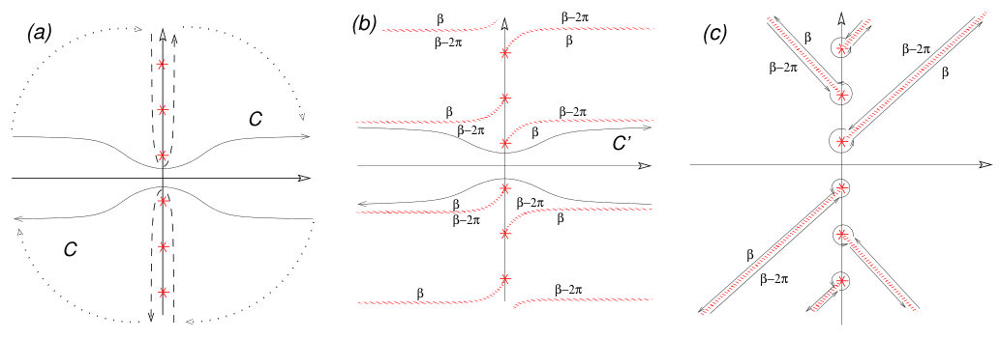
<figcaption class="paper-figure-caption"><b>Fig 1.</b> FIG. 1. Various integration paths of the free energy functional. (a) The original dashed-line contour around the Matsubara poles z∗= iεn = iπT(1 + 2n) (stars) of the tanh(z/2T) function can be modified to run differently in the complex energy plane. This contour can be used up to Eq. (21). (b) After integration by parts in Eqs. (22-23), we generate a non-analytic function log(cosh z), and the contour has to be completely in the analyticity domain of this function. The branch cut of the log w-function is quite arbitrary, and we show it for the case (Re w, Im w) = (t cos β, t sin β) with t ∈[0, ∞) and β = 3π/4. The argument of w = cosh z is shown on the edges of the branch cuts. This contour...</figcaption>
</figure>
<figure class="paper-figure-card">
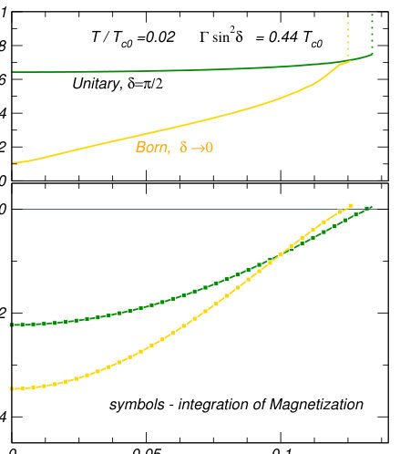
<figcaption class="paper-figure-caption"><b>Fig 2.</b> FIG. 4. Disordered uniform Pauli-limited d-wave supercon- ductor at low temperatures, T = 0.02Tc0. The scattering rate γ = Γ sin2 δ = 0.44Tc0 is the same for unitary (δ = π/2) and Born (δ →0) impurities. (a) Magnetization, and (b) free en- ergy, as functions of (Zeeman) magnetic field. The free energy in (b) is calculated in two ways: directly using Eq. (45) shown by the line, and by integration, Eq. (47), of the magnetization curves in (a), shown by the symbols. Both methods give the same result within numerical accuracy.</figcaption>
</figure>
<figure class="paper-figure-card">
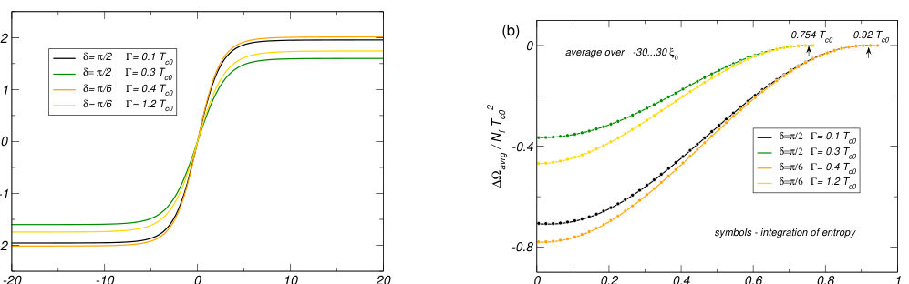
<figcaption class="paper-figure-caption"><b>Fig 3.</b> FIG. 5. (a) Domain wall in the d-wave superconductor with opposite-sign amplitudes in two domains; (b) spatially averaged free energy across the domain wall, over −30ξ0 . . . 30ξ0. The coherence length is defined as ξ0 = ℏvF/2πkBTc0. We use two values of the scattering rate γ = Γ sin2 δ = {0.1, 0.3}Tc0 that give the indicated bulk transition temperatures. The unitary (δ = π/2) and Born (δ = π/6) impurities result in different order parameter values, and different free energies. The dot-symbols in (b) are obtained by integration of entropy.</figcaption>
</figure>
<figure class="paper-figure-card">
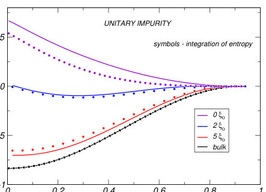
<figcaption class="paper-figure-caption"><b>Fig 4.</b> FIG. 6. The “spatial density” of free energy Eq. (45) at differ- ent locations across the domain wall, shown by the solid lines, and “spatial density” obtained by the temperature-integrated entropy Eq. (49), shown by dot-symbols. “Spatial densities” obtained in different ways don’t agree with each other, ex- cept in the uniform (bulk) case, but generally show the same patterns. Shown are unitary impurities; results for the Born limit are very similar.</figcaption>
</figure>
<figure class="paper-figure-card">
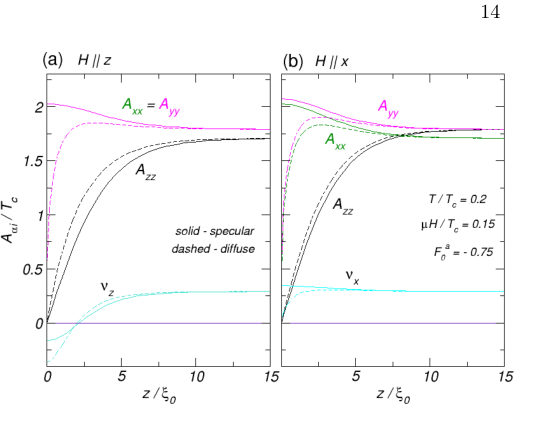
<figcaption class="paper-figure-caption"><b>Fig 5.</b> FIG. 7. The order parameter of a triplet p-wave superfluid near a quasiparticle-reflecting surface, in the presence of a magnetic field. The quasiparticle scattering from the surface is modeled as specular (solid lines) or diffuse (dashed lines). (a) the magnetic field is oriented perpendicular to the surface H ∥z; (b) the magnetic field is parallel to the surface, in this case H ∥x.</figcaption>
</figure>
</div>

<p><strong>Summary.</strong> This work develops a generalized free energy functional for disordered and non-uniform superconductors by extending the Luttinger-Ward formalism. It incorporates disorder effects via the self-consistent t-matrix approximation and handles spatial variations using complex contour integration. The resulting theory provides a powerful tool to calculate superconducting properties in complex materials, such as those with interfaces or magnetic fields.</p>
<p><strong>Why it may be interesting.</strong> The rigorous mathematical framework for calculating thermodynamic potentials in the presence of disorder and spatial gradients is highly relevant for understanding complex many-body systems, bridging concepts from BCS theory to modern condensed matter theory.</p>
<details>
<summary>Detailed structure</summary>
<p><strong>Main problem.</strong> The paper aims to derive the free energy functional for superconducting systems, specifically accounting for the effects of disorder and spatial non-uniformities.</p>
<p><strong>Main result.</strong> The free energy functional is formulated generally using a complex energy plane integral, applicable to various unconventional superconductors and hybrid systems.</p>
<p><strong>Method.</strong> The derivation extends the Luttinger-Ward functional, employing the self-consistent t-matrix approximation for disorder and utilizing contour integration in the complex energy plane to unify different formalisms.</p>
<p><strong>Model / system.</strong> The system under study is disordered superconductors and superfluids, including unconventional singlet and triplet condensates, potentially subjected to external Zeeman magnetic fields or interfaces.</p>
<p><strong>Key observables.</strong> Free energy ($\Omega$), induced charge density ($
ho_{    ext{ind}}$), orbital current ($\mathbf{J}<em ext_spin="ext{spin">{   ext{orb}}$), and magnetization ($\mathbf{M}</em>$).}</p>
<p><strong>Important parameters / regimes.</strong> Impurity scattering strengths, interface scattering types (specular vs. diffuse), external magnetic fields ($\mathbf{H}$), and temperature ($T$).</p>
<p><strong>Assumptions / limitations.</strong> The theory assumes weak-coupling superconductivity and relies on self-consistent approximations for disorder and the inclusion of electromagnetic potentials perturbatively.</p>
<p><strong>Figures summary.</strong> Figures illustrate spatial profiles of mean-field order parameters and magnetization near interfaces, comparing results for specular versus diffuse scattering.</p>
<p><strong>Paper structure.</strong> The structure involves extending the Luttinger-Ward functional, deriving self-consistency equations for the self-energy using the t-matrix approximation, converting Matsubara sums to complex contour integrals, and finally applying the formalism to calculate electromagnetic contributions and pair-breaking energies.</p>
</details>
<details>
<summary>Abstract</summary>
<p>We extend the Luttinger-Ward free energy functional to disordered superconductors and superfluids with arbitrary scattering mechanisms, including both impurity disorder and the presence of interfaces. The disorder is taken into account within the self-consistent $t$-matrix approximation, thus allowing for arbitrary impurity scattering strengths. It is shown that both the interface and the impurity scattering self-energy appear in the functional only implicitly, through self-consistently determined fermionic propagators. The free energy functional is formulated in terms of a generalized integral in the complex energy plane, which encompasses formulations both in terms of retarded/advanced propagators and in terms of Matsubara Green's functions by appropriately choosing the integration path. It can be applied, e.g., to spatially non-uniform and hybrid systems, triplet and other unconventional condensates, and strongly-correlated Fermi liquids. A particularly useful formulation in terms of the quasiclassical propagators is applied to unconventional non-uniform singlet and triplet superconductors and superfluids in an external Zeeman magnetic field.</p>
</details>
<p><sub><a href="#top">↑ back to top</a></sub></p>

<p><a id="paper-2608.20006"></a></p>
<h3 id="dissipation-driven-champion-solitons-in-one-dimensional-shallow-water-waves"><a href="http://arxiv.org/abs/2608.20006v1">Dissipation-driven champion solitons in one-dimensional shallow-water waves</a></h3>
<p><strong>Authors:</strong> Ashleigh Simonis, Sergey Nazarenko, Jalal Shatah, Yulin Pan<br>
<strong>Type:</strong> theory · <strong>Category:</strong> other · <strong>PDF:</strong> <a href="https://arxiv.org/pdf/2608.20006v1">https://arxiv.org/pdf/2608.20006v1</a><br>
<strong>Analysis basis:</strong> full PDF text, analyzed in chunks
<strong>Topic relevance:</strong> <code>correlated / nonlocal dissipation</code> <strong>2/5</strong> · <code>driven-dissipative phase transition</code> <strong>2/5</strong> · <code>non-equilibrium universality</code> <strong>2/5</strong> · <code>Frenkel-Kontorova</code> <strong>1/5</strong> · <code>Keldysh / 2PI / non-Gaussian methods</code> <strong>1/5</strong> · <code>analog quantum simulation</code> <strong>1/5</strong> · <code>methods for driven-dissipative</code> <strong>1/5</strong> · <code>scars &amp; prethermalization</code> <strong>1/5</strong></p>
<div class="figure-strip-hint">↔ Scroll figures horizontally</div>
<div class="paper-figures-scroll">
<figure class="paper-figure-card">
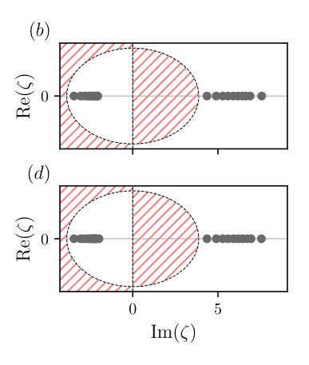
<figcaption class="paper-figure-caption"><b>Fig 1.</b> Figure 1: Surface elevation 휂and corresponding discrete eigenvalue spectrum in the 휁-plane obtained via DST at (top row) 푡= 0 and (bottom row) 푡≈2 × 106푇푝for the conservative KB system. The lower half 퐸-plane (i.e., where Im[퐸(휁)] &lt; 0) is marked by the red hatched region and the continuous spectrum region (i.e., where Im[퐸(휁)] = 0) is marked by the dashed black line.</figcaption>
</figure>
<figure class="paper-figure-card">
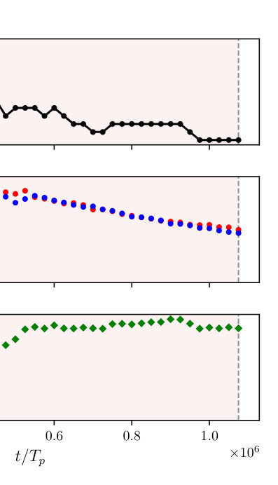
<figcaption class="paper-figure-caption"><b>Fig 2.</b> Figure 2: Evolution of bound-state properties of the system obtained via DST. (푎) Number of bound states 푁BS present in the system; (푏) maximum amplitude of the left-propagating (red points) and right-propagating (blue points) solitons; (푐) ratio of soliton energy to the total system energy. The relaxation, intensification, and quasi-steady stages, including subsequent decay, are marked by orange, green, and red shading, respectively.</figcaption>
</figure>
<figure class="paper-figure-card">
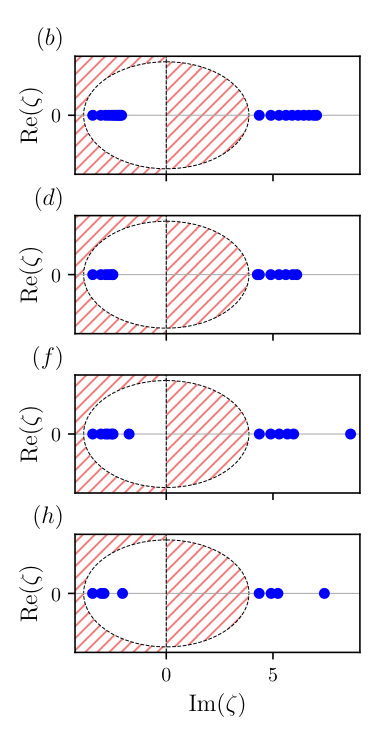
<figcaption class="paper-figure-caption"><b>Fig 3.</b> Figure 3: Evolution of the surface elevation 휂(left column) and corresponding discrete eigenvalue spectrum in the 휁-plane obtained via DST (right column). The four rows present snapshots at 푡= 0, 푡= 1.5 × 105푇푝, 푡= 3.5 × 105푇푝, and 푡= 1.075 × 106푇푝.</figcaption>
</figure>
<figure class="paper-figure-card">
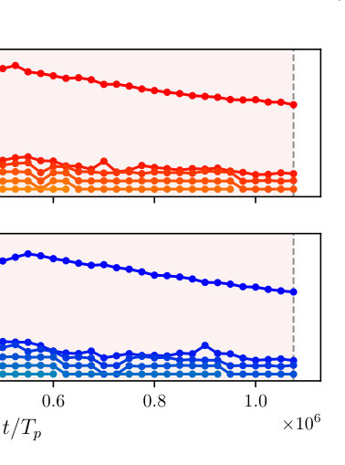
<figcaption class="paper-figure-caption"><b>Fig 4.</b> Figure 4: Evolution of the amplitudes of the bound states present in the system. (푎) Left-propagating solitons; (푏) right-propagating solitons. Each curve represents an individual bound state, with darker colours indicating stronger solitons. The relaxation, intensification, and quasi-steady stages, including subsequent decay, are marked by orange, green, and red shading, respectively.</figcaption>
</figure>
<figure class="paper-figure-card">
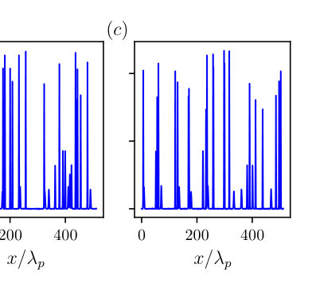
<figcaption class="paper-figure-caption"><b>Fig 5.</b> Figure 5: Evolution of the soliton-only component 휂푠under weak small-scale dissipation. Panels (푎)–(푐) show the 32-soliton ensemble at 푡= 0, 푡= 3.75 × 105푇푝, and 푡= 7.5 × 105푇푝, respectively.</figcaption>
</figure>
</div>

<p><strong>Summary.</strong> This paper introduces a mechanism where weak dissipation in shallow-water waves does not simply damp energy but instead drives the formation of intense 'champion solitons.' By perturbing the integrable Kaup-Boussinesq system with high-wavenumber damping, the authors show that random waves catalyze energy transfer into these dominant coherent structures.</p>
<p><strong>Why it may be interesting.</strong> While focused on classical fluid dynamics, the concept of energy channeling from a complex background (random waves) into a few dominant, coherent structures via a weak non-conservative perturbation shares conceptual parallels with energy localization mechanisms studied in open quantum systems or nonlinear wave physics.</p>
<details>
<summary>Detailed structure</summary>
<p><strong>Main problem.</strong> The paper investigates a novel mechanism for rogue wave formation in shallow-water waves, specifically examining how weak dissipation can induce the intensification of coherent structures.</p>
<p><strong>Main result.</strong> Weak, high-wavenumber dissipation, in conjunction with random wave fields, drives the formation of a 'champion soliton' in both directions of propagation, counter to the general expectation that dissipation damps such structures.</p>
<p><strong>Method.</strong> The study uses a pseudospectral method with a fourth-order Runge-Kutta time-marching scheme to simulate the evolution of the wave field governed by the Kaup-Boussinesq equation.</p>
<p><strong>Model / system.</strong> The system is a bidirectional shallow-water wave field modeled by the Kaup-Boussinesq (KB) equation, which is perturbed by a weak, high-wavenumber dissipative term, breaking its underlying integrability.</p>
<p><strong>Key observables.</strong> Champion soliton amplitude, energy transfer from random waves to coherent structures, and the evolution of the discrete spectrum eigenvalues ($\Omega_j$).</p>
<p><strong>Important parameters / regimes.</strong> Weak dissipation strength, initial random wave energy spectrum, and the ratio of soliton energy to total system energy.</p>
<p><strong>Assumptions / limitations.</strong> The analysis assumes that high-wavenumber dissipation provides a physically natural perturbation, and the Direct Scattering Transform (DST) is used as an effective tool for analyzing the spectral problem.</p>
<p><strong>Figures summary.</strong> Figures show the evolution of surface elevation ($\eta$) and the discrete spectrum; Figure 2 tracks the three stages (relaxation, intensification, quasi-steady) of soliton growth; Figure 3 provides snapshots of the wave field at key time thresholds.</p>
<p><strong>Paper structure.</strong> The paper first establishes the physical model and the counterintuitive nature of the results. It then analyzes the evolution through distinct stages (relaxation to intensification) using spectral methods, culminating in the identification and characterization of the champion soliton.</p>
</details>
<details>
<summary>Abstract</summary>
<p>In this paper, we identify a new mechanism for rogue wave formation in a shallow-water setting. We study a bidirectional shallow-water wave field in the context of the Kaup-Boussinesq equation, and introduce a weak high-wavenumber dissipative perturbation that breaks the underlying integrability of the system. In this setting, dominant solitons grow through successive interactions with weaker, co-propagating solitons, leading to the formation of a "champion soliton" in each direction of propagation. This behaviour is in contrast to the general intuition that dissipation damps coherent structures, and instead shows that weak dissipation can induce their intensification. Moreover, we find that weak dissipation alone is not sufficient for champion soliton formation; the presence of random waves plays a crucial role in the intensification process, catalysing the transfer of energy into dominant coherent structures. While champion solitons have previously been studied in non-integrable systems, these works primarily consider perturbations introduced through modifications of the nonlinear terms (e.g., higher-order Korteweg-de Vries and Schrödinger-type models). In the present work, high-wavenumber dissipation provides a more physically natural perturbation, since such small-scale damping is a common feature in many systems.</p>
</details>
<p><sub><a href="#top">↑ back to top</a></sub></p>

<p><a id="paper-2608.19731"></a></p>
<h3 id="nonlinear-tunnel-oscillations-of-light-in-spherical-bragg-resonators"><a href="http://arxiv.org/abs/2608.19731v1">Nonlinear tunnel oscillations of light in spherical Bragg resonators</a></h3>
<p><strong>Authors:</strong> Victor P. Ruban<br>
<strong>Type:</strong> theory · <strong>Category:</strong> other · <strong>PDF:</strong> <a href="https://arxiv.org/pdf/2608.19731v1">https://arxiv.org/pdf/2608.19731v1</a><br>
<strong>Analysis basis:</strong> full PDF text, analyzed in chunks
<strong>Topic relevance:</strong> <code>Keldysh / 2PI / non-Gaussian methods</code> <strong>2/5</strong> · <code>analog quantum simulation</code> <strong>2/5</strong> · <code>methods for driven-dissipative</code> <strong>2/5</strong> · <code>Tavis-Cummings &amp; cavity-many-emitter</code> <strong>1/5</strong> · <code>driven-dissipative phase transition</code> <strong>1/5</strong> · <code>interference shaping light</code> <strong>1/5</strong></p>
<div class="figure-strip-hint">↔ Scroll figures horizontally</div>
<div class="paper-figures-scroll">
<figure class="paper-figure-card">
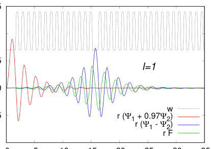
<figcaption class="paper-figure-caption"><b>Fig 1.</b> Figure 1: Examples of localized (non-normalized) linear so- lutions in the presence of central TE-mode. Here 14 lay- ers with larger dielectric permittivity are arranged through distance π starting from coordinate r0 = 1.938π, and all the other layers are shifted along r additionally on value 0.612π. The eigen-frequencies are ξ1 = −0.00066164155, ξ2 = 0.001185237. Also the shell mode of TM type is shown, for which ξTM = 0.0002669188.</figcaption>
</figure>
<figure class="paper-figure-card">
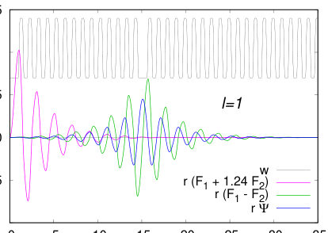
<figcaption class="paper-figure-caption"><b>Fig 2.</b> Figure 2: Examples of localized (non-normalized) linear so- lutions in the presence of central TM-mode. Here 14 lay- ers with larger dielectric permittivity are arranged through distance π starting from coordinate r0 = 1.302π, and all the other layers are shifted along r additionally on value 0.62π. Here the eigen-frequencies are ξ1 = −0.0023929839, ξ2 = −0.0001324124. Also the shell mode of TE type is shown, for which ξTE = −0.0013708785.</figcaption>
</figure>
<figure class="paper-figure-card">
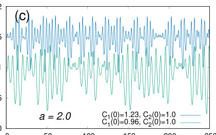
<figcaption class="paper-figure-caption"><b>Fig 3.</b> Figure 3: Examples of various nonlinear regimes in the mod- elling of radial tunneling of light in the framework of equations (22)-(23).</figcaption>
</figure>
</div>

<p><strong>Summary.</strong> This paper models the nonlinear tunneling of light in a spherical dielectric Bragg resonator by deriving a coupled Hamiltonian system of ODEs. The analysis focuses on the interaction between a central mode and surrounding 'shell' modes. It demonstrates how Kerr-type nonlinearity modifies the wave dynamics, providing insights into nonlinear wave propagation in structured optical cavities.</p>
<p><strong>Why it may be interesting.</strong> This work is highly relevant to quantum optics and open quantum systems, as it models nonlinear wave dynamics (tunneling) in structured dielectric media, which can be analogous to cavity QED or nonlinear photonics systems.</p>
<details>
<summary>Detailed structure</summary>
<p><strong>Main problem.</strong> The paper theoretically investigates the weakly nonlinear regime of radial tunneling of light within a spherical dielectric Bragg resonator.</p>
<p><strong>Main result.</strong> The dynamics are described by a coupled Hamiltonian system of ODEs for the field coefficients, showing that nonlinearity significantly alters the tunneling behavior compared to the linear case.</p>
<p><strong>Method.</strong> The analysis employs a variational method on the Lagrangian structure to derive effective nonlinear coefficients, leading to a Hamiltonian system of ordinary differential equations.</p>
<p><strong>Model / system.</strong> The system is a spherical dielectric Bragg resonator containing a central radial mode and multiple 'shell' eigenmodes. The dynamics are governed by coupled ODEs for the complex field coefficients $C_1(t)$ and $C_2(t)$.</p>
<p><strong>Key observables.</strong> The coefficients $C_1(t)$ and $C_2(t)$ determining the field magnitude and orientation at the center and the shell, respectively; the action $I = |\vec{C}_1|^2 + |\vec{C}_2|^2$.</p>
<p><strong>Important parameters / regimes.</strong> The 'asymmetry parameter' of the tunnel coupling, and the effective Kerr coefficients $ ilde{\alpha}$ and $ ilde{eta}$.</p>
<p><strong>Assumptions / limitations.</strong> The analysis assumes a weakly nonlinear regime, treating the central mode as Kerr-type nonlinear while the shell modes remain linear. It also assumes a locally isotropic, spatially nonuniform dielectric medium.</p>
<p><strong>Figures summary.</strong> Figures 1 and 2 illustrate examples of localized linear solutions for TE and TM modes, showing the field structure near central and shell defects.</p>
<p><strong>Paper structure.</strong> The paper first establishes the linear theory and the Hamiltonian formulation for the field evolution. It then derives the coupled nonlinear ODEs for the mode coefficients, analyzes the resulting Hamiltonian structure, and discusses the physical implications of the nonlinear coupling.</p>
</details>
<details>
<summary>Abstract</summary>
<p>A weakly nonlinear regime of radial tunneling is theoretically considered for a light wave in a spherical dielectric Bragg resonator containing a set of <code>shell'' eigenmodes (both TE and TM) with different azimuthal numbers $l\geq 1$, which are concentrated near a defect of the Bragg structure, several layers away from the origin. A single radial mode with $l=1$ is present at the resonator center, either TM or TE. Nonlinearity of the Kerr type in the main approximation is actual for the central mode only, while all the shell modes remain in the linear regime. The tunneling occurs between the central mode and the shell $l=1$ mode of the same symmetry. Nontrivial part of the dynamics of optical field is described by a Hamiltonian system of ordinary differential equations for complex vectors ${\bf C}_{1}(t)$ and ${\bf C}_{2}(t)$, which determine the magnitude and spatial orientation of the wave structures at the center and at the shell, respectively. Depending on</code>asymmetry parameter'' of tunnel coupling, the system demonstrates different variants of nonlinear behavior.</p>
</details>
<p><sub><a href="#top">↑ back to top</a></sub></p>

<p><a id="paper-2608.20166"></a></p>
<h3 id="photogalvanic-transport-of-nonreciprocal-cooper-pair-fluctuations"><a href="http://arxiv.org/abs/2608.20166v1">Photogalvanic transport of nonreciprocal Cooper-pair fluctuations</a></h3>
<p><strong>Authors:</strong> Joaquim Telles de Miranda, Alex Levchenko<br>
<strong>Type:</strong> theory · <strong>Category:</strong> other · <strong>PDF:</strong> <a href="https://arxiv.org/pdf/2608.20166v1">https://arxiv.org/pdf/2608.20166v1</a><br>
<strong>Analysis basis:</strong> full PDF text, analyzed in chunks
<strong>Topic relevance:</strong> <code>Keldysh / 2PI / non-Gaussian methods</code> <strong>2/5</strong> · <code>methods for driven-dissipative</code> <strong>2/5</strong> · <code>correlated / nonlocal dissipation</code> <strong>1/5</strong> · <code>driven-dissipative phase transition</code> <strong>1/5</strong> · <code>non-equilibrium universality</code> <strong>1/5</strong></p>
<div class="figure-strip-hint">↔ Scroll figures horizontally</div>
<div class="paper-figures-scroll">
<figure class="paper-figure-card">
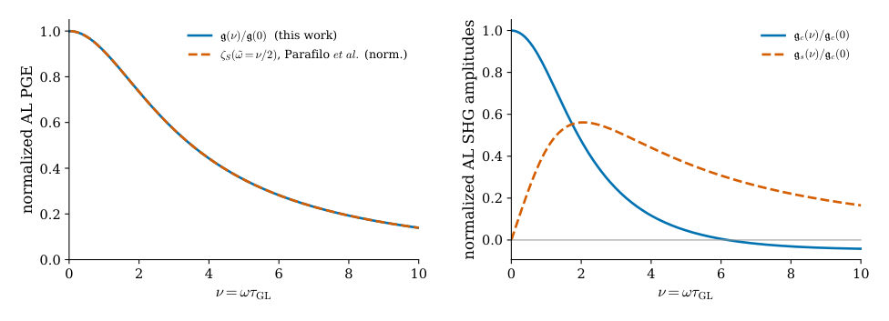
<figcaption class="paper-figure-caption"><b>Fig 1.</b> Figure 1: Left: normalized AL PGE master function g(ν)/g(0) [identical for the C3v invariant and for both D3h chan- nels], compared with the normalized photogalvanic response ζS of Parafilo et al. [28] evaluated at ˜ω = ν/2: the two frequency profiles coincide exactly (see text). Right: AL SHG amplitudes gc(ν) (in phase) and gs(ν) (quadrature), normalized by gc(0) = 1/24.</figcaption>
</figure>
<figure class="paper-figure-card">
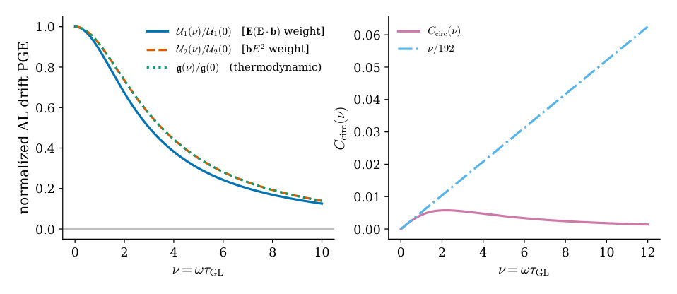
<figcaption class="paper-figure-caption"><b>Fig 2.</b> Figure 2: Left: normalized PGE master functions of the AL linear-drift (kinetic) channel, Eq. (48): the E(E · b) weight U1 and the bE2 weight U2, compared with the thermodynamic profile g(ν) (dotted). Both weights retain their dc signs at all frequencies, with the anisotropy ratio U2/U1 remaining close to its dc value −1</figcaption>
</figure>
<figure class="paper-figure-card">
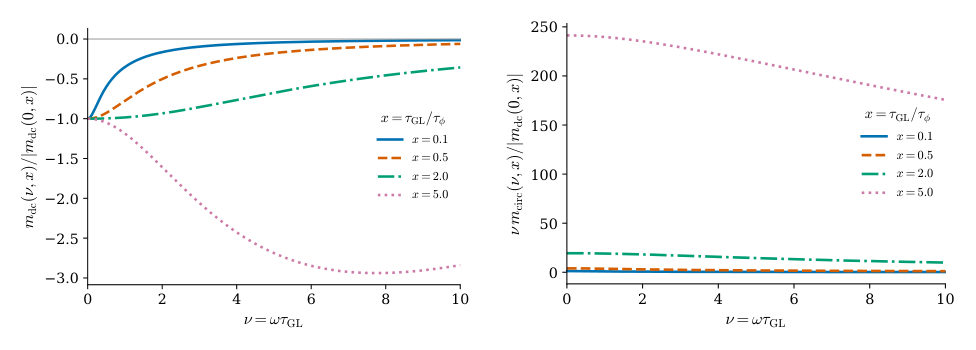
<figcaption class="paper-figure-caption"><b>Fig 3.</b> Figure 3: Left: normalized MT PGE master function mdc(ν, x)/|mdc(0, x)| for several dephasing ratios x = τGL/τϕ. Right: the helicity-odd (circular) MT master function ν mcirc(ν, x) of Sec. 6; its finite ν →0 intercept equals m1(x)/4 [Eq. (78)], reflecting the 1/ν growth of mcirc itself.</figcaption>
</figure>
<figure class="paper-figure-card">

<figcaption class="paper-figure-caption"><b>Fig 4.</b> Figure 4: MT SHG amplitudes, normalized by the static PGE magnitude, for several dephasing ratios: in-phase mc (left) and quadrature ν ms (right; the amplitude ms itself diverges as 1/ν at small ν, see Sec. 5.3).</figcaption>
</figure>
<figure class="paper-figure-card">

<figcaption class="paper-figure-caption"><b>Fig 5.</b> Figure 5: Finite-frequency master functions of the kinetic (linear drift) MT channel, normalized by the static value m1(x)/2, for several dephasing ratios [gray: cubic drift at x = 0.5, normalized by m3(0.5)/2]. Left: rectified amplitude M dc 1 ; middle: in-phase SHG amplitude M c 1; right: quadrature amplitude M s 1, with the linear onset of Eq. (71) — no 1/ν enhancement, in contrast with the thermodynamic MT channel of Fig. 4.</figcaption>
</figure>
</div>

<p><strong>Summary.</strong> This work develops a comprehensive theory for nonlinear transport in fluctuating 2D noncentrosymmetric superconductors. It extends previous models by incorporating nonreciprocity into the kinetic relaxation terms of the Ginzburg-Landau theory. The key finding is that this kinetic nonreciprocity enables a polarization-sensitive photogalvanic response in the Aslamazov-Larkin channel, offering a clean experimental signature for nonreciprocal pair kinetics.</p>
<p><strong>Why it may be interesting.</strong> The explicit connection between non-equilibrium fluctuation dynamics (kinetic invariants) and measurable optical/transport responses (PGE, PVHE) provides a powerful tool for characterizing broken inversion symmetry in superconductors, relevant to advanced quantum materials research.</p>
<details>
<summary>Detailed structure</summary>
<p><strong>Main problem.</strong> Developing a theory for the nonlinear optical and transport responses (photogalvanic, SHG, photovoltaic Hall effect) in 2D noncentrosymmetric superconductors in the fluctuation regime above $T_c$.</p>
<p><strong>Main result.</strong> The kinetic nonreciprocity, encoded in kinetic Lifshitz invariants, allows for a polarization-sensitive, helicity-odd rectified current in the Aslamazov-Larkin channel, which was previously only seen in the Maki-Thompson channel.</p>
<p><strong>Method.</strong> Derivation of generalized master formulas for the nonlinear current in the Aslamazov-Larkin and Maki-Thompson channels using the time-dependent Ginzburg-Landau description.</p>
<p><strong>Model / system.</strong> Two-dimensional noncentrosymmetric superconductors operating in the fluctuation regime ($T \gtrsim T_c$). The dynamics are modeled using the stochastic TDGL equation incorporating both thermodynamic and kinetic nonreciprocal terms.</p>
<p><strong>Key observables.</strong> Photogalvanic current, second-harmonic generation, photovoltaic Hall current, and their dependence on circular polarization (helicity-odd rectification).</p>
<p><strong>Important parameters / regimes.</strong> Temperature relative to $T_c$, drive frequency ($\omega$), nonreciprocal perturbation strength ($\delta\alpha, 
ho$), and point-group symmetry ($C_{3v}, D_{3h}$).</p>
<p><strong>Assumptions / limitations.</strong> The analysis is performed to linear order in nonreciprocal perturbations and to second order in the drive field, assuming the Fluctuation-Dissipation Theorem holds.</p>
<p><strong>Figures summary.</strong> Not specified.</p>
<p><strong>Paper structure.</strong> The paper develops the TDGL dynamics, derives generalized master formulas for the AL and MT channels (incorporating both thermodynamic and kinetic nonreciprocity), and analyzes the polarization dependence and symmetry constraints.</p>
</details>
<details>
<summary>Abstract</summary>
<p>We develop a theory of the nonlinear optical and transport responses of two-dimensional noncentrosymmetric superconductors in the fluctuation regime above the transition temperature, encompassing the photogalvanic effect, second-harmonic generation, and the photovoltaic Hall effect. In the vicinity of the transition these responses are strongly enhanced by preformed Cooper pairs, whose nonreciprocity enters the time-dependent Ginzburg-Landau description in two physically distinct ways: through thermodynamic Lifshitz invariants, which encode an asymmetric pair spectrum, and through kinetic Lifshitz invariants, which encode an asymmetric pair relaxation and are locked to the Langevin noise by the fluctuation-dissipation theorem. We derive generalized master formulas for the paraconductivity (Aslamazov-Larkin) and the quantum-interference (Maki-Thompson) channels of the nonlinear current, valid at arbitrary drive frequency and to linear order in the nonreciprocal perturbations, and reduce them to closed-form dimensionless functions. Circular polarization discriminates sharply between the mechanisms: for reciprocal momentum-structureless noise the Aslamazov-Larkin channel is polarization insensitive and its circular photogalvanic response vanishes for any pair spectrum, whereas the Maki-Thompson channel and the nonreciprocal noise support helicity-odd rectified currents, including a fluctuation photovoltaic Hall current flowing transverse to the strain axis. Applications to Rashba-type ($C_{3v}$) and Ising-type ($D_{3h}$) superconductors demonstrate how the point-group symmetry dictates the allowed vector structures of the nonlinear currents, and how polarization analysis together with the frequency and dephasing dependences can be used to separate the individual channels experimentally.</p>
</details>
<p><sub><a href="#top">↑ back to top</a></sub></p>

<p><a id="paper-2608.19911"></a></p>
<h3 id="search-for-majorana-bound-states-in-short-chains-of-proxmitised-quantum-dots"><a href="http://arxiv.org/abs/2608.19911v1">Search for Majorana Bound States in Short Chains of Proxmitised Quantum Dots</a></h3>
<p><strong>Authors:</strong> Bogdan R. Bułka, Karol I. Wysokiński<br>
<strong>Type:</strong> theory · <strong>Category:</strong> other · <strong>PDF:</strong> <a href="https://arxiv.org/pdf/2608.19911v1">https://arxiv.org/pdf/2608.19911v1</a><br>
<strong>Analysis basis:</strong> full PDF text, analyzed in chunks
<strong>Topic relevance:</strong> <code>Keldysh / 2PI / non-Gaussian methods</code> <strong>2/5</strong> · <code>analog quantum simulation</code> <strong>2/5</strong> · <code>methods for driven-dissipative</code> <strong>2/5</strong></p>
<div class="figure-strip-hint">↔ Scroll figures horizontally</div>
<div class="paper-figures-scroll">
<figure class="paper-figure-card">

<figcaption class="paper-figure-caption"><b>Fig 1.</b> FIG. 1. Scheme of a sandwich geometry of n quantum dots chain in proximity to the BCS superconductor and a semiconductor with strong spin - orbit coupling.</figcaption>
</figure>
<figure class="paper-figure-card">

<figcaption class="paper-figure-caption"><b>Fig 2.</b> FIG. 2. Energy spectrum of the chain with 2QD (red), 4QD (black), and 6QD (blue) as a function of µ at Vz = 0 (top panel) and a function of Vz at µ = 0 (bottom panel) for tso = 1 and ∆CAR = 0.5. Note the level crossing near zero energy, as well as the crossings in the upper and lower energy branches.</figcaption>
</figure>
<figure class="paper-figure-card">

<figcaption class="paper-figure-caption"><b>Fig 3.</b> FIG. 3. Scheme of the 4QD chain with a staggered spin configuration and alternating inter-dot couplings. The notation in the picture corresponds to the Ψ state. For the Φ state, the spins at all quantum dots would be re- versed.</figcaption>
</figure>
<figure class="paper-figure-card">

<figcaption class="paper-figure-caption"><b>Fig 4.</b> FIG. 4. Phase diagram of the open 4QD Majo- rana chain in the (µ, Vz) plane determined from the nonlocal zero-energy chiral Majorana Green function log  1 + |Gr γA0ηB1(0)|  describing the transfer γA1 → ηB1 →γA2 →ηB2, for tso = 1, ∆CAR = 0.5 and γL = γR = 0.05. The colour scale represents the strength of coherent nonlocal Majorana propagation be- tween opposite ends of the chain. Bright regions indicate strong edge-to-edge coherence, enhanced teleportation- like transport, and strongly hybridised finite-size Majo- rana states, while dark regions correspond to suppressed nonlocal propagation and localised edge-mode behavior. In the two regions symmetric with respect to µ = 0 lo- cated...</figcaption>
</figure>
</div>

<p><strong>Summary.</strong> This work theoretically explores the existence and nature of Majorana Zero Modes in a quantum dot chain coupled to superconductors. By employing multiple advanced methods—including Green functions and transfer matrices—the authors map out the phase diagram, confirming the topological protection of these zero-energy states. The findings provide a detailed guide for engineering superconducting quantum devices hosting exotic topological excitations.</p>
<p><strong>Why it may be interesting.</strong> The rigorous comparison between Green function and transfer matrix results provides a robust theoretical confirmation of topological phase transitions in mesoscopic superconducting structures, which is highly relevant for designing superconducting quantum circuits.</p>
<details>
<summary>Detailed structure</summary>
<p><strong>Main problem.</strong> The paper investigates the search for Majorana Zero Modes (MZM) in a specific artificial platform: a short chain of quantum dots (QDs) coupled to superconductors and semiconductors.</p>
<p><strong>Main result.</strong> The analysis confirms that the system exhibits distinct topological regimes, characterized by the appearance of zero-energy modes, which are consistently predicted by multiple theoretical approaches (Green function, transfer matrix).</p>
<p><strong>Method.</strong> The study employs advanced theoretical techniques including the Green function formalism in chiral Majorana representation, the transfer matrix method, and the calculation of topological invariants (Pfaffians).</p>
<p><strong>Model / system.</strong> The system is a chain of QDs sandwiched between an s-wave superconductor and a strong spin-orbit semiconductor, subjected to a Zeeman field. The model is analyzed via an effective Hamiltonian derived under several approximations.</p>
<p><strong>Key observables.</strong> The modulus of the retarded Green function at zero energy, the energy spectrum ($\omega_{0,nQD}$), and the topological invariant ($
u$).</p>
<p><strong>Important parameters / regimes.</strong> Chemical potential ($\mu$), Zeeman field ($V_z$), and the coupling strengths ($t_{so}$, $\Delta_{CAR}$).</p>
<p><strong>Assumptions / limitations.</strong> The analysis neglects spin-conserving hopping processes and local on-dot superconducting correlations, and often assumes a large superconducting gap limit.</p>
<p><strong>Figures summary.</strong> Figures illustrate the energy spectrum for varying QD lengths (2QD, 4QD, 6QD) and show phase diagrams mapping out topological boundaries based on $\mu$ and $V_z$.</p>
<p><strong>Paper structure.</strong> The paper develops the Hamiltonian, calculates the spectrum using the Green function and transfer matrix approaches, and then compares the resulting phase diagrams and signatures (oscillatory vs. localized wavefunctions) derived from these complementary methods.</p>
</details>
<details>
<summary>Abstract</summary>
<p>Majorana zero modes (MZM) appearing at the ends of artificially created one-dimensional p-wave superconductors have been intensively studied recently both theoretically and experimentally. Among possible platforms, proximitised semiconducting wires, and short chains of quantum dots with a superconductor in between were investigated. Here, we propose a different platform consisting of a chain of quantum dots (QDs) sandwiched between an s-wave superconductor and a strong spin-orbit semiconductor, subject to a Zeeman magnetic field. Neglecting spin-conserving hopping processes between QDs and local on-dot superconducting correlations induced by the superconducting proximity effect, reduces the Hamiltonian to the sum of two equivalent Hamiltonians with two independent Hilbert spaces. The resulting model has a staggered structure due to spin-flipping processes $t_{so}$ and cross-Andreev reflections $Δ_{CAR}$ between neighbouring dots. Our central result is the phase diagram of a short chain consisting of four QDs and coupled to two external reservoirs, obtained by means of the Green function in chiral Majorana representation. The modulus of the retarded Green function, probing the whole chain and calculated for zero energy, is shown to contain information on topology and spatial character of Majorana zero modes. The features observed in the Green function nicely agree with those obtained from the transfer matrix approach. In particular the region in parameter space in which Majorana zero modes display oscillatory wave functions are well reproduced. Likewise the borders of the fermion parity changes obtained by the Green function agree with those obtained by other means.</p>
</details>
<p><sub><a href="#top">↑ back to top</a></sub></p>

<p><a id="paper-2608.19503"></a></p>
<h3 id="electronic-and-chemical-phase-identification-in-photoemission-experiments-using-unsupervised-machine-learning"><a href="http://arxiv.org/abs/2608.19503v1">Electronic and chemical phase identification in photoemission experiments using unsupervised machine learning</a></h3>
<p><strong>Authors:</strong> Matthew Staab, Joseph Pandur, Eli Rotenberg, Chris Jozwiak, Aaron Bostwick, Inna Vishik<br>
<strong>Type:</strong> both · <strong>Category:</strong> disordered systems and neural networks · <strong>PDF:</strong> <a href="https://arxiv.org/pdf/2608.19503v1">https://arxiv.org/pdf/2608.19503v1</a><br>
<strong>Analysis basis:</strong> full PDF text, analyzed in chunks
<strong>Topic relevance:</strong> <code>methods for driven-dissipative</code> <strong>2/5</strong> · <code>quantum measurements</code> <strong>2/5</strong> · <code>analog quantum simulation</code> <strong>1/5</strong></p>
<div class="figure-strip-hint">↔ Scroll figures horizontally</div>
<div class="paper-figures-scroll">
<figure class="paper-figure-card">

<figcaption class="paper-figure-caption"><b>Fig 1.</b> FIG. 1. Schematic overview for the AARDVARK system. Data are collected at the beamline end station and saved to disk. The beamline requests a new position to measure and begins measuring a new location. Asynchronously, the GPU edge server is loading all new data and repeating the machine learning pipeline. The machine learning pipeline ends by overwriting the list of next positions to measure with an updated list. We schematically show only one measurement suggestion (red circle) but in practice the server adapts the number of suggestions it creates to ensure there are always positions available for the beamline upon request.</figcaption>
</figure>
<figure class="paper-figure-card">

<figcaption class="paper-figure-caption"><b>Fig 2.</b> FIG. 2. Colorized UMAP embeddings of ground truth dataset. (a) Spatial plot of the UMAP embedded ARPES data. The colors are made by scaling the range of the UMAP x, y, z coordinates to [0, 255] such that they can be displayed in the red, green, and blue channels of an image respectively. (b) The set of all ARPES spectra shown in their UMAP di- mensionality reduced space with the markers colored based on the same procedure described in (a). (c) ARPES spec- tra taken at the locations indicated by the black marker and numbers in (a) and (b).</figcaption>
</figure>
<figure class="paper-figure-card">

<figcaption class="paper-figure-caption"><b>Fig 3.</b> FIG. 3. Progression of an AARDVARK scan on ARPES data. (a) Coordinates of sampled data with (125, 200, 400, 600, 1000, 2000) points measured are shown in (a1-a6) respectively. (b) Nearest-neighbor colorized 3-dimensional UMAP embeddings of ARPES spectra collected at the points shown in (a). Different colors indicate different spectral features as found by the dimensionality reduction method UMAP. (c) The acquisition function that is used to determine the priority of following measurements. Darker pixels indicate a higher measurement priority.</figcaption>
</figure>
<figure class="paper-figure-card">

<figcaption class="paper-figure-caption"><b>Fig 4.</b> FIG. 4. Progression of an AARDVARK scan on XPS data. (a) Coordinates of sampled data with (125, 200, 400, 600, 1000, 2000) points measured are shown in (a1-a6) respectively. (b) Nearest-neighbor colorized 3-dimensional UMAP embeddings of XPS spectra of the Si 2p core level collected at the points shown in (a). Different colors indicate different spectral features as found by the dimensionality reduction method UMAP. (c) The acquisition function that is used to determine the priority of following measurements. Darker pixels indicate a higher measurement priority.</figcaption>
</figure>
<figure class="paper-figure-card">

<figcaption class="paper-figure-caption"><b>Fig 5.</b> FIG. 5. Comparison of AARDVARK operation on ARPES data with random or grid search. Rows (a-c) show the progression of scans using AARDVARK, random positions, and grid searches respectively. Panels (1–6) display colorized UMAP visual- izations for scans (AARDVARK, random, and grid) at approximately 125, 200, 400, 600, 1000, and 2000 measurement points, respectively. In the case of a grid search the closest square number is used to simulate a scan of approximately the same number of points (e.g. 121 instead of 125). Dotted yellow lines on the fourth column represent the boundaries of the cropped UMAP embeddings analyzed in Figure 6 .</figcaption>
</figure>
</div>

<p><strong>Summary.</strong> This paper introduces AARDVARK, an autonomous machine learning framework designed to optimize data collection in surface-sensitive photoemission experiments. It uses UMAP to reduce high-dimensional spectral data and Gaussian Process Regression to predict spectral properties, guiding the measurement process to efficiently map out unknown electronic and chemical phase boundaries. This represents a significant step toward automating complex experimental characterization.</p>
<p><strong>Why it may be interesting.</strong> While focused on experimental data acquisition, the reliance on advanced ML techniques (UMAP, GPR) to extract phase information from complex, high-dimensional spectral data is highly relevant for analyzing quantum many-body simulations or experimental data sets where phase boundaries are sought.</p>
<details>
<summary>Detailed structure</summary>
<p><strong>Main problem.</strong> Traditional methods for characterizing heterogeneous surfaces using VUV photoemission spectroscopy are time-consuming and inefficient.</p>
<p><strong>Main result.</strong> The proposed AARDVARK framework successfully and efficiently maps out spectroscopically distinct regions and phase boundaries on uncharacterized samples.</p>
<p><strong>Method.</strong> The framework combines UMAP for high-dimensional spectral data dimensionality reduction with Gaussian Process Regression (GPR) to guide real-time, autonomous data acquisition.</p>
<p><strong>Model / system.</strong> The system is applied to VUV photoemission experiments (ARPES/XPS) on complex materials like graphene heterostructures, treating the sample surface as a spatially varying, uncharacterized dataset.</p>
<p><strong>Key observables.</strong> Colorized UMAP embeddings of spectra, spectral features (e.g., Dirac cone), and the calculated uncertainty/acquisition function guiding measurement selection.</p>
<p><strong>Important parameters / regimes.</strong> The dimensionality reduction technique (UMAP) and the Gaussian Process model structure are key computational components.</p>
<p><strong>Assumptions / limitations.</strong> The primary assumption is that spectral similarity in the high-dimensional space can be accurately captured by a low-dimensional manifold (UMAP), and that GPR can reliably predict spectral characteristics in unmeasured regions.</p>
<p><strong>Figures summary.</strong> Figures illustrate the AARDVARK workflow, colorized UMAP embeddings showing spectral variations across the sample, and comparisons demonstrating AARDVARK's superior boundary detection compared to random or grid searches.</p>
<p><strong>Paper structure.</strong> The paper introduces the AARDVARK framework, details the ML pipeline combining UMAP and GPR, demonstrates its application to ARPES and XPS data, and evaluates its performance by comparing boundary detection against standard search methods.</p>
</details>
<details>
<summary>Abstract</summary>
<p>Vacuum ultraviolet photoemission spectroscopies are very information-rich experiments, but due to their surface sensitivity, data are often collected on an initially uncharacterized surface. Traditional raster-grid approaches for locating optimal measurement regions can be time-consuming. In this work, we introduce AARDVARK, a generalizable framework for sample exploration that leverages dimensionality reduction and Gaussian process regression to guide initial sample searches in spatially-resolved photoemission experiments. By utilizing UMAP as a target for a Gaussian process, the algorithm efficiently identifies boundaries of spectroscopically distinct regions, dynamically adapting to variations in sample characteristics. The algorithm enables real-time decision making in measurement selection, optimizes data acquisition, and presents a robust framework for future autonomous sample exploration in photoemission experiments.</p>
</details>
<p><sub><a href="#top">↑ back to top</a></sub></p>

<p><a id="paper-2608.20323"></a></p>
<h3 id="spin-torque-microwave-detectors-of-positive-rectangular-pulse-signals"><a href="http://arxiv.org/abs/2608.20323v1">Spin-torque microwave detectors of positive rectangular pulse signals</a></h3>
<p><strong>Authors:</strong> V. Prokopenko, O. Shtanko, I. Sotnyk, O. Prokopenko<br>
<strong>Type:</strong> theory · <strong>Category:</strong> other · <strong>PDF:</strong> <a href="https://arxiv.org/pdf/2608.20323v1">https://arxiv.org/pdf/2608.20323v1</a><br>
<strong>Analysis basis:</strong> full PDF text, analyzed in chunks
<strong>Topic relevance:</strong> <code>Keldysh / 2PI / non-Gaussian methods</code> <strong>1/5</strong> · <code>analog quantum simulation</code> <strong>1/5</strong> · <code>driven-dissipative phase transition</code> <strong>1/5</strong> · <code>methods for driven-dissipative</code> <strong>1/5</strong> · <code>non-equilibrium universality</code> <strong>1/5</strong> · <code>quantum measurements</code> <strong>1/5</strong></p>
<div class="figure-strip-hint">↔ Scroll figures horizontally</div>
<div class="paper-figures-scroll">
<figure class="paper-figure-card">

<figcaption class="paper-figure-caption"><b>Fig 1.</b> FIG. 1. (a) Layout of a circular STMD consisting of free and pinned magnetic layers separated by a dielectric spacer. When an input pulse current I(t) is applied to the structure, it excites the magnetization dynamics, M(t), described by the normalized magnetization vector m ≡m(t) = M(t)/|M(t)|. The vector m precesses along a particu- lar trajectory, depending on the configuration of the bias dc magnetic field Bdc: an in-plane trajectory (red dotted curve) for an in-plane field Bdc = BIP dc (red dashed arrow) and an out-of-plane trajectory (blue dotted curve) for an out-of-plane field Bdc = BOOP dc (blue dashed arrow). (b) A set of plots illustrating the principle of the device oper- ation...</figcaption>
</figure>
<figure class="paper-figure-card">

<figcaption class="paper-figure-caption"><b>Fig 2.</b> FIG. 2. Typical time dependence of (a) the input rectangular pulse current I(t), (c) the x-component of dynamic magnetization, mx(t), (d) the device magnetoresistance R(t), and (b, e) the voltage U(t) generated across the device. Solid red lines and dashed blue lines in (b)-(e) correspond to the IP and OOP regimes of STMD operation, respectively. Picture (f) shows the trajectory of magnetization motion (red line for an in-plane regime and blue line for an out-of-plane regime) on a surface of unit sphere |m| = 1. Calculations performed for pulse parameters I0 = 0.5 mA, τ = 2 ns, T = 4 ns. All other calculation parameters are indicated in the text.</figcaption>
</figure>
<figure class="paper-figure-card">

<figcaption class="paper-figure-caption"><b>Fig 3.</b> FIG. 3. The detector output dc voltage Udc as a function of the amplitude I0 of input pulse current calculated numerically for different pulse durations τ and a pulse repetition period of T = 2 ns (a, c) and T = 4 ns (b, d). All calculations were performed for an STMD with typical parameters (see the main text for details), with IP magnetization dynamics (a, b) and OOP magnetization dynamics (c, d). The curves shown in (a, b, d) demonstrate good agreement with the approximate linear dependence Udc ∼I0(τ/T), however, the curves in (c) contain voltage jumps and drops, which are typical for the nonlinear regime of device operation. To simplify the analysis, the curves with the same T/τ ratio...</figcaption>
</figure>
</div>

<p><strong>Summary.</strong> This work investigates how a spin-torque microwave detector (STMD) responds to rectangular current pulses, revealing two operational regimes. The linear regime allows for the unambiguous detection of input pulse parameters via a predictable linear relationship between the measured DC voltage and the pulse parameters. This suggests practical utility for developing spintronic devices capable of digital signal processing.</p>
<p><strong>Why it may be interesting.</strong> While the core physics is spintronics, the analysis of non-linear dynamics and the identification of a linear operating regime for signal processing parallels concepts in open quantum systems where linear response theory is used to characterize system response to weak perturbations.</p>
<details>
<summary>Detailed structure</summary>
<p><strong>Main problem.</strong> The paper analyzes the performance of a spin-torque microwave detector (STMD) when driven by positive rectangular current pulses to detect and process non-harmonic (digital) microwave signals.</p>
<p><strong>Main result.</strong> The STMD exhibits two regimes: a linear regime where the DC voltage is proportional to $I_0 (	au/T)$, which is ideal for parameter detection, and a nonlinear regime characterized by voltage jumps/drops in the out-of-plane magnetization case.</p>
<p><strong>Method.</strong> The analysis involves deriving the time-averaged voltage $U_{dc}$ from the time-dependent voltage $U(t) = I(t)R(t)$ by solving the Landau-Lifshitz-Gilbert-Slonczewski equation for magnetization dynamics.</p>
<p><strong>Model / system.</strong> The system is an STMD based on Magnetic Tunnel Junctions (MTJs). Magnetization dynamics are modeled using the macrospin approximation governed by the LLG equation, considering both in-plane (IP) and out-of-plane (OOP) magnetization dynamics.</p>
<p><strong>Key observables.</strong> Time-averaged DC voltage ($U_{dc}$), instantaneous voltage ($U(t)$), and the dependence of $U_{dc}$ on input pulse amplitude ($I_0$), duration ($ au$), and repetition period ($T$).</p>
<p><strong>Important parameters / regimes.</strong> The linear regime is characterized by $U_{dc} \sim I_0 (	au/T)$; the nonlinear regime is associated with a threshold amplitude $I_{th}$.</p>
<p><strong>Assumptions / limitations.</strong> The analysis relies on the macrospin approximation for magnetization dynamics and assumes fixed polarization magnetization along $\hat{x}$.</p>
<p><strong>Figures summary.</strong> Figure 2 illustrates the time dependence of voltage and magnetization for IP and OOP regimes. Figure 3 plots $U_{dc}$ versus $I_0$ for various $    au$ and $T$, showing linear behavior in the IP case and nonlinear jumps in the OOP case.</p>
<p><strong>Paper structure.</strong> The paper analyzes the STMD response to periodic rectangular pulses, deriving the governing equations, identifying two distinct operational regimes (linear/IP and nonlinear/OOP), and concluding that the linear regime offers unambiguous parameter detection.</p>
</details>
<details>
<summary>Abstract</summary>
<p>We analyze the performance of a spin-torque microwave detector (STMD) driven by positive rectangular current pulses $I(t)$ of various amplitudes $I_0$, durations $τ$, and repetition periods $T$ and reveal two distinct regimes of STMD operation. In the first (linear) regime, the time-averaged voltage across the detector, $U_{\rm dc}$, changes linearly with the pulse amplitude $I_0$ and depends on the ratio $τ/T$: $U_{\rm dc} \sim I_0 (τ/T)$. This regime is observed for a wide range of pulse amplitudes $I_0$ in the case of in-plane (IP) magnetization dynamics and for rather small pulse amplitudes $I_0 \le I_{\rm th}$ in an STMD with out-of-plane (OOP) magnetization dynamics. The other (nonlinear) regime is characterized by voltage jumps and drops and is observed only in a structure with OOP magnetization dynamics for input pulses with short repetition periods and large amplitudes $I_0 \ge I_{\rm th}$. We believe that the linear regime of STMD operation can be used to unambiguously detect input pulse parameters, which could be important for the development and optimization of spintronic devices capable of detecting and processing non-harmonic (e.g., digital) microwave signals.</p>
</details>
<p><sub><a href="#top">↑ back to top</a></sub></p>

<p><a id="paper-2608.19362"></a></p>
<h3 id="channel-selective-magnetic-filtering-in-a-nodal-line-semimetal"><a href="http://arxiv.org/abs/2608.19362v1">Channel-selective magnetic filtering in a nodal-line semimetal</a></h3>
<p><strong>Authors:</strong> Hironmoy Pratihar, Alessandro De Martino, Arijit Kundu<br>
<strong>Type:</strong> theory · <strong>Category:</strong> other · <strong>PDF:</strong> <a href="https://arxiv.org/pdf/2608.19362v1">https://arxiv.org/pdf/2608.19362v1</a><br>
<strong>Analysis basis:</strong> full PDF text, analyzed in chunks
<strong>Topic relevance:</strong> <code>Keldysh / 2PI / non-Gaussian methods</code> <strong>1/5</strong></p>
<div class="figure-strip-hint">↔ Scroll figures horizontally</div>
<div class="paper-figures-scroll">
<figure class="paper-figure-card">

<figcaption class="paper-figure-caption"><b>Fig 1.</b> Figure 1. Schematic of the NLS magnetic-barrier geometry. The nodal ring lies in the x–y plane and the magnetic field is nonzero only within the strip 0 ≤x ≤L. The system remains translationally invariant along the transverse y and z directions.</figcaption>
</figure>
<figure class="paper-figure-card">

<figcaption class="paper-figure-caption"><b>Fig 2.</b> Figure 2. (a) Bulk dispersion (6) for qz = 0. (b) Cross- sections of a constant-energy surface at fixed qz before the barrier (left panel) and after the barrier (right panel). For fixed (E, qz), there are two propagating channels, correspond- ing to the inner and the outer contour. The dashed line shows a fixed value of the conserved momentum qy, and qx,± are the magnitude of the allowed longitudinal component of the mo- mentum in the region x &lt; 0, see Eq. (9). In the transmitted region x &gt; L, the vector potential shifts the contour center by −BL along qy, producing transmitted channels with different longitudinal momenta q′ x,±, see Eq. (27).</figcaption>
</figure>
<figure class="paper-figure-card">

<figcaption class="paper-figure-caption"><b>Fig 3.</b> Figure 3. Transmission probabilities |ts|2 at normal incidence (qy = qz = 0) for energy E = 150 (10.5 meV), plotted as functions of magnetic field B with L = 5 (130 nm), (panel (a)) and of barrier width L with B = 5 (panel (b)). The transmission in channel s abruptly vanishes when BL reaches the critical value p</figcaption>
</figure>
<figure class="paper-figure-card">

<figcaption class="paper-figure-caption"><b>Fig 4.</b> Figure 4. Polar plots of transmission probabilities at qz = 0 as a function of the azimuthal angle ϕ, for channel −[panel (a)] and channel + [panel (b)], for several values of the mag- netic field. We use the same parameters as in Fig. 3(a): E = 150 (10.5 meV), L = 5 (130 nm), q0 = 53, c = 148.</figcaption>
</figure>
<figure class="paper-figure-card">

<figcaption class="paper-figure-caption"><b>Fig 5.</b> Figure 4 shows polar plots of the transmission proba- bility at energy E = 150 as a function of the azimuthal angle ϕ at qz = 0, for the −channel [panel (a)] and the + channel [panel (b)], for several values of the mag- netic field. On this qz slice the relevant contour radius is Rs(0) = p</figcaption>
</figure>
</div>

<p><strong>Summary.</strong> This theoretical work analyzes quantum transport in a nodal-line semimetal subjected to a magnetic barrier. By modeling the toroidal Fermi surface, the authors show that the barrier selectively filters the two distinct transport channels (inner and outer) at different critical strengths. This sequential quenching of conductance provides a unique, measurable signature confirming the material's underlying topological electronic structure.</p>
<p><strong>Why it may be interesting.</strong> The concept of channel-selective filtering based on the topology of the Fermi surface is a sophisticated manifestation of quantum transport physics, relevant to understanding topological materials and their response to external fields.</p>
<details>
<summary>Detailed structure</summary>
<p><strong>Main problem.</strong> The study investigates quantum transport through a magnetic barrier in a nodal-line semimetal (NLS) to demonstrate a phenomenon called channel-selective magnetic filtering.</p>
<p><strong>Main result.</strong> The magnetic barrier acts as a filter by sequentially blocking the inner and outer transport channels of the toroidal Fermi surface at different critical barrier strengths. This sequential quenching provides an experimental fingerprint of the NLS's toroidal geometry.</p>
<p><strong>Method.</strong> The authors employed a wave-function matching approach using a two-band effective Hamiltonian to derive closed-form, channel-resolved transmission amplitudes across the barrier.</p>
<p><strong>Model / system.</strong> The system is an NLS characterized by a nodal ring, leading to a toroidal constant-energy surface with two distinct inner and outer propagating channels. The transport is modeled by introducing a magnetic barrier (stripe) using a Landau gauge vector potential.</p>
<p><strong>Key observables.</strong> Two-terminal conductance ($G/A$), channel-resolved transmission amplitudes ($|t_s|^2$), and the dependence of conductance on barrier strength ($BL$) and Fermi energy ($E$).</p>
<p><strong>Important parameters / regimes.</strong> The field-width product ($BL$), the Fermi energy ($E$), and the characteristic momentum scale ($q_0$).</p>
<p><strong>Assumptions / limitations.</strong> The magnetic barrier is idealized as a step profile (uniform $B$ over width $L$), and the analysis assumes the film thickness is much smaller than the fringe field decay length.</p>
<p><strong>Figures summary.</strong> Figures illustrate the NLS magnetic-barrier geometry, the constant-energy surface cross-sections showing two channels, and plots demonstrating the asymmetric suppression of the two channels' transmission probabilities and the total conductance as the barrier strength increases.</p>
<p><strong>Paper structure.</strong> The paper establishes the physical model (NLS with toroidal FS) and the transport setup (magnetic barrier). It then applies the Hamiltonian and wave-function matching techniques to derive channel-resolved transmission. The core argument builds by showing the unequal response of the inner and outer channels to the magnetic field, culminating in the prediction of sequential conductance quenching.</p>
</details>
<details>
<summary>Abstract</summary>
<p>We study quantum transport through a magnetic barrier in a nodal-line semimetal. When the Fermi energy lies near the nodal ring, the Fermi surface has toroidal geometry. Each cross-section in a plane parallel to the nodal ring consists of two concentric contours, inner and outer, carrying distinct transport channels. We show that a magnetic barrier resolves these two channels: because the contours enclose different momentum-space areas, they accommodate the field-induced transverse-momentum shift unequally, and the inner channel is cut off at a weaker barrier strength than the outer. Using a two-band effective Hamiltonian and a wave-function matching approach, we obtain closed-form, channel-resolved transmission amplitudes. Over a finite window of barrier strength the inner contour is fully blocked while the outer still transmits, so the barrier acts as a channel-selective filter. This sequential quenching shapes the two-terminal conductance, which decreases with barrier strength as the two channels close in turn and terminates once the outer channel is cut off, providing experimentally accessible fingerprints of the toroidal Fermi surface of a nodal-line semimetal.</p>
</details>
<p><sub><a href="#top">↑ back to top</a></sub></p>

<p><a id="paper-2608.20245"></a></p>
<h3 id="coulomb-blockade-like-transport-and-enhanced-memory-in-organic-transistors-embedded-with-sub-nm-pt-nanoparticles-for-neuromorphic-computing"><a href="http://arxiv.org/abs/2608.20245v1">Coulomb blockade-like transport and enhanced memory in organic transistors embedded with sub-nm Pt nanoparticles for neuromorphic computing</a></h3>
<p><strong>Authors:</strong> Arash Ghobadi, Thomas B. Kallaos, Abhi Abhijeet, Stephen C. Klue, Joseph C. Mathai, Carsten A. Ullrich, Shubhra Gangopadhyay, Suchismita Guha<br>
<strong>Type:</strong> experiment · <strong>Category:</strong> disordered systems and neural networks · <strong>PDF:</strong> <a href="https://arxiv.org/pdf/2608.20245v1">https://arxiv.org/pdf/2608.20245v1</a><br>
<strong>Analysis basis:</strong> full PDF text, analyzed in chunks
<strong>Topic relevance:</strong> <code>quantum measurements</code> <strong>1/5</strong></p>
<div class="figure-strip-hint">↔ Scroll figures horizontally</div>
<div class="paper-figures-scroll">
<figure class="paper-figure-card">

<figcaption class="paper-figure-caption"><b>Fig 1.</b> Fig. 1| Organic transistors with PtNPs mimic short-term plasticity. a, Schematic of a biological neuron with the release of neurotransmitters mediated by calcium ions that results in short-term plasticity (STP). b, Device architecture of organic transistor with DPP-DTT as the semiconducting layer and PVDF-HFP as the gate dielectric. ALD grown Al2O3 (12 nm thickness) sputtered with PtNPs along a 2 nm ALD grown Al2O3 tunneling layer is placed between the</figcaption>
</figure>
<figure class="paper-figure-card">

<figcaption class="paper-figure-caption"><b>Fig 2.</b> Fig. 2| Transfer sweeps and memory window. a, Transfer characteristics (black curve) of the controlled DPP-DTT transistor without any PtNPs. The red curve shows the square-root of the transfer plot. The intercept of the dotted red line on the x-axis denotes Vth. b, Transfer characteristics (black curve) of the PtNP embedded DPP-DTT transistor with 2 nm Al2O3 tunneling layer. The red curve shows the square-root of the transfer plot. The intercept of the dotted green line on the x-axis denotes Vth. c, Transfer characteristics (black curve) of the PtNP embedded DPP-DTT transistor with 3 nm Al2O3 tunneling layer. The red curve shows the square-root of the transfer plot. VDS was at -7 V for all...</figcaption>
</figure>
<figure class="paper-figure-card">

<figcaption class="paper-figure-caption"><b>Fig 3.</b> Fig. 3| Coulomb-blockade-like transport. a, Reverse-sweep transfer characteristics of a PtNP embedded transistor with 2 nm Al2O3 tunneling layer. The two plateaus with oscillatory current behavior observed are zoomed in on the right. b, A Pt13 cluster is plotted in VESTA.35 c, A comparison of the EA and IP energies of a Pt13 cluster estimated from DFT33 and experimental data. d, The PtNPs between the two Al2O3 layers (light gray slabs) on top of the PVDF- HFP layer (dark gray slab) act as a sheet of charge resulting in an electric field which screens the applied field. e, The</figcaption>
</figure>
<figure class="paper-figure-card">

<figcaption class="paper-figure-caption"><b>Fig 4.</b> Fig. 4| Dual programmability and neural image recognition networks from ~ 0.7 nm PtNP embedded DPP-DTT based transistors with 3 nm Al2O3 tunneling layer. a, Current-time response under optical writing at 532 nm followed by electrical erasing. Optical writing was performed at VGS = +1 V and VDS = −7 V using 532 nm light pulses with a power density of 0.03 Wcm-² and a pulse timing of 1 s on/off. Electrical erasing was performed using VGS = +2 V gate pulses with the same pulse timing. The zoomed-in view on the right shows the stepwise increase in current during optical programming. b, Current-time response under optical writing at 405 nm with a power density of 0.08 Wcm-2, followed by...</figcaption>
</figure>
</div>

<p><strong>Summary.</strong> This work engineers organic transistors by embedding sub-nanometer platinum nanoparticles (PtNPs) at the dielectric interface to enhance memory and control charge trapping. The resulting devices exhibit Coulomb blockade-like transport and a large memory window, allowing them to mimic complex biological synaptic functions like Short-Term Plasticity. This paves a new route for developing next-generation neuromorphic hardware.</p>
<p><strong>Why it may be interesting.</strong> The study bridges solid-state physics (Coulomb blockade, charge trapping) with computational neuroscience, providing an experimental platform for studying non-equilibrium charge dynamics relevant to artificial synapses.</p>
<details>
<summary>Detailed structure</summary>
<p><strong>Main problem.</strong> Developing organic transistors for neuromorphic computing that exhibit enhanced memory and support complex synaptic plasticity (like Short-Term Plasticity, STP).</p>
<p><strong>Main result.</strong> The incorporation of sub-nm Pt nanoparticles into the dielectric interface creates a robust memory window and enables multimodal programming, mimicking biological synaptic behavior.</p>
<p><strong>Method.</strong> The study involves fabricating thin-film transistors using organic semiconductors and ferroelectric dielectrics, followed by electrical and optical characterization.</p>
<p><strong>Model / system.</strong> The physical system is an organic thin-film transistor utilizing an interfacial stack of Al2O3/PtNP/Al2O3 between a polymer semiconductor and a ferroelectric dielectric.</p>
<p><strong>Key observables.</strong> Large memory window (&gt; 20 V), Coulomb blockade-like transport plateaus, current spikes, and measurable synaptic weight updates via optical and electrical stimuli.</p>
<p><strong>Important parameters / regimes.</strong> Sub-nm PtNP size (e.g., 0.7 nm), dielectric thickness (2 nm or 3 nm Al2O3), and operating voltages (up to 20 V).</p>
<p><strong>Assumptions / limitations.</strong> The PtNPs create a localized charge trapping/de-trapping region that effectively influences the channel conductance, enabling discrete charge states.</p>
<p><strong>Figures summary.</strong> Figures illustrate the device architecture, HRTEM images of PtNPs, transfer characteristics showing hysteresis, and I-V sweeps demonstrating quantized current plateaus and photo-electrical response.</p>
<p><strong>Paper structure.</strong> The paper details the fabrication process, presents electrical characterization (I-V sweeps, transfer curves), analyzes the quantum-like transport features (Coulomb blockade), and finally demonstrates the application to synaptic plasticity using both electrical and optical stimuli.</p>
</details>
<details>
<summary>Abstract</summary>
<p>Organic transistors are playing an increasingly important role for neuromorphic applications. However, devices that rely solely on ferroelectric switching or on interface traps for their multi-conductance states exhibit limited memory windows. Here, we introduce an ultrathin oxide layer with a uniform distribution of sub-nm platinum nanoparticles (PtNPs) at the interface of a polymer semiconducting and a ferroelectric dielectric in a thin film transistor architecture. The interfacial stack, Al$_2$O$_3$/PtNP/Al$_2$O$_3$, provides a viable route for localized charge trapping and de-trapping in a region where it can most effectively influence the channel conductance. The organic transistors display a large memory window (&gt; 20 V) in their current-voltage characteristics. The sub-nm PtNPs give rise to features that are consistent with room temperature Coulomb blockade-like transport, supporting discrete and well-separated levels within the memory window. The devices support multimodal programming using electrical and optical stimuli with both long-term plasticity and enhanced short-term plasticity (STP) phenomena. These results open new directions for implementing STP in the development of neuromorphic computing.</p>
</details>
<p><sub><a href="#top">↑ back to top</a></sub></p>

<p><a id="paper-2608.20115"></a></p>
<h3 id="effects-of-the-surface-on-double-surface-fermi-arcs-in-a-realistic-tight-binding-model-of-namath1084mathbi-100"><a href="http://arxiv.org/abs/2608.20115v1">Effects of the surface on double surface Fermi arcs in a realistic tight-binding model of Na$_3$Bi (100)</a></h3>
<p><strong>Authors:</strong> Vasilios K. Passias, Lucas K. Wagner<br>
<strong>Type:</strong> theory · <strong>Category:</strong> other · <strong>PDF:</strong> <a href="https://arxiv.org/pdf/2608.20115v1">https://arxiv.org/pdf/2608.20115v1</a><br>
<strong>Analysis basis:</strong> full PDF text, analyzed in chunks
<strong>Topic relevance:</strong> <code>analog quantum simulation</code> <strong>1/5</strong></p>
<div class="figure-strip-hint">↔ Scroll figures horizontally</div>
<div class="paper-figures-scroll">
<figure class="paper-figure-card">

<figcaption class="paper-figure-caption"><b>Fig 1.</b> FIG. 1. Schematic diagram of Weyl (a) and topological Dirac (b) semimetals with their bulk and surface Brillouin zone features. In (a), we consider a time-reversal symmetry breaking Weyl semimetal with a minimum of two Weyl points having Chern number C = ±1. A Weyl point with positive (blue) Chern number is a source of Berry curvature field indicated by the outward arrows, whereas inward arrows denote a negative (red) Chern number Weyl point. The dashed Fermi arcs are on the lower surface Brillouin zones. The colored disks on the surface Brillouin zones are the surface projected bulk Weyl points. In (b), the DSFAs on the TDSM terminations are lune shaped and, at the Dirac point energy, are...</figcaption>
</figure>
<figure class="paper-figure-card">

<figcaption class="paper-figure-caption"><b>Fig 2.</b> FIG. 2. Na3Bi’s bulk and (100) surface Brillouin zones with high symmetry k-points and Dirac points labeled.</figcaption>
</figure>
<figure class="paper-figure-card">

<figcaption class="paper-figure-caption"><b>Fig 3.</b> FIG. 3. Atomic structure of the two Na3Bi (100) surface terminations considered in this work. The green and blue atoms are the Na atoms, while the red atoms are Bi atoms. The red Bi atoms and blue Na atoms are in the honeycomb layers with bonds between them. The green Na atoms are between the honeycomb layers. We denote [010], [001], and [210] as the x-, y- and z-directions, respectively.</figcaption>
</figure>
<figure class="paper-figure-card">

<figcaption class="paper-figure-caption"><b>Fig 4.</b> Fig. 3 shows the two surfaces we considered in this paper. One was the charge compensated (CC) system, in which both terminations have three Na atoms and one Bi atom, a stoichiometric arrangement. The other structure we term the charge uncompensated (CU) sys- tem, because unlike CC, CU’s terminations had a non- stoichiometric ratio of Na to Bi atoms, with the top ter- mination having one Bi atom and two Na atoms, whereas the bottom termination had only two Na atoms. Chemi- cally, we believe it is likely that CC is lower energy than CU.</figcaption>
</figure>
<figure class="paper-figure-card">

<figcaption class="paper-figure-caption"><b>Fig 5.</b> FIG. 4. CC’s Fermi surface plots, in (a)-(c), for three differ- ent thicknesses. nl denotes the number of layers. The (100) surface projected bulk Dirac points are indicated by dark- goldenrod squares. CU’s Fermi surface plots, from (d)-(f), have additional states from its terminations compared to the CC Fermi surfaces. The coordinates are in reciprocal lattice units (r.l.u.)</figcaption>
</figure>
</div>

<p><strong>Summary.</strong> This work investigates how surface termination affects the characteristic double surface Fermi arcs in the topological Dirac semimetal $   ext{Na}_3   ext{Bi} (100)$. Using tight-binding models derived from DFT, the authors compare stoichiometric and non-stoichiometric surfaces. They conclude that while the surface can significantly alter the global arc structure, the underlying local topological physics, such as spin-momentum locking, remains remarkably robust.</p>
<p><strong>Why it may be interesting.</strong> While focused on condensed matter topology, the robust nature of local topological signatures (like spin-momentum locking) despite surface perturbations is relevant to understanding boundary conditions in quantum systems, which has parallels in open quantum systems theory.</p>
<details>
<summary>Detailed structure</summary>
<p><strong>Main problem.</strong> The study investigates how different surface terminations (stoichiometric vs. non-stoichiometric) affect the double surface Fermi arcs (DSFAs) in the topological Dirac semimetal $   ext{Na}_3   ext{Bi} (100)$.</p>
<p><strong>Main result.</strong> The local properties, such as spin momentum locking, appear robust, allowing the surface to reshape the arc fingerprint without destroying the arc-like physics, although the non-stoichiometric surface shows distinct changes compared to the stoichiometric one.</p>
<p><strong>Method.</strong> The research employs first principles derived tight-binding (TB) models, parameterized from Density Functional Theory (DFT) calculations, to simulate the electronic structure of slab geometries.</p>
<p><strong>Model / system.</strong> The physical system is the $    ext{Na}_3   ext{Bi} (100)$ surface, modeled using supercell slab structures derived from a 2-layer periodic unit cell. The analysis compares results from both charge compensated (CC, stoichiometric) and charge uncompensated (CU, non-stoichiometric) terminations.</p>
<p><strong>Key observables.</strong> Double surface Fermi arcs (DSFAs), spin expectation value ($\langle \hat{S} 
angle$), electronic band structure evolution with thickness and chemical potential ($\mu$), and the presence/absence of cusps at projected Dirac points.</p>
<p><strong>Important parameters / regimes.</strong> Surface termination type (CC vs. CU), film thickness (20 to 60 layers), and chemical potential ($\mu$).</p>
<p><strong>Assumptions / limitations.</strong> The study assumes that surface charges are not large enough to materially change the Fermi level, and the TB model accuracy is assumed sufficient for the low-energy physics near the Fermi level.</p>
<p><strong>Figures summary.</strong> Figures illustrate schematic comparisons of Weyl vs. Dirac semimetals, the atomic structure of the two terminations, and detailed bandplots showing the evolution of Fermi arcs and bulk bands for both CC and CU terminations as a function of thickness and chemical potential.</p>
<p><strong>Paper structure.</strong> The paper establishes the physical context of $    ext{Na}_3   ext{Bi}$ and DSFAs, details the methodology using DFT-derived TB models on slab geometries, and then presents comparative results analyzing the electronic structure differences between the stoichiometric (CC) and non-stoichiometric (CU) surfaces across varying thicknesses and chemical potentials.</p>
</details>
<details>
<summary>Abstract</summary>
<p>Na$_3$Bi is a topological Dirac semimetal (TDSM) that can support double surface Fermi arcs (DSFAs), which are important for its material classification and their potential use in spintronic devices. However, it is unclear how the surfaces affect realistic Na$_3$Bi (100) systems. To investigate the effects of diverse surfaces on DSFAs, we consider first principles derived tight-binding models of two Na$_3$Bi (100) terminations. On the stoichiometric termination, we find DSFAs as expected. On the non-stoichiometric structure there are DSFAs on one termination and two loops that retain many of the properties of DSFAs. Thus, the local properties such as spin momentum locking and hybridization with the Dirac points appear to be more robust than their global connectivity. That is, the surface can reshape the arc fingerprint without destroying the arc-like physics.</p>
</details>
<p><sub><a href="#top">↑ back to top</a></sub></p>

<p><a id="paper-2608.19648"></a></p>
<h3 id="giant-orbital-hall-effect-from-cubic-dresselhaus-orbital-coupling"><a href="http://arxiv.org/abs/2608.19648v1">Giant orbital Hall effect from cubic Dresselhaus orbital coupling</a></h3>
<p><strong>Authors:</strong> Gwen Sevilen, Kyoung-Min Kim<br>
<strong>Type:</strong> theory · <strong>Category:</strong> other · <strong>PDF:</strong> <a href="https://arxiv.org/pdf/2608.19648v1">https://arxiv.org/pdf/2608.19648v1</a><br>
<strong>Analysis basis:</strong> full PDF text, analyzed in chunks
<strong>Topic relevance:</strong> <code>analog quantum simulation</code> <strong>1/5</strong></p>
<div class="figure-strip-hint">↔ Scroll figures horizontally</div>
<div class="paper-figures-scroll">
<figure class="paper-figure-card">

<figcaption class="paper-figure-caption"><b>Fig 1.</b> FIG. 1. Orbital Berry curvature (OBC). (a)–(b) Momentum-space distribution of the OBC for (a) the linear case (β = 3 eV ˚A, α = 0, and ∆= 0.1 eV) and (b) the cu- bic case (β = 3 eV ˚A, α = 800 eV ˚A3, and ∆= 0.1 eV). Green dots indicate the Γ point, while red dots indicate the cubic Dresselhaus hot spots k0. (c) Hot-spot location as a function of the energy splitting ∆for β = 3 eV ˚A and α = 800 eV ˚A3. The red solid line shows the numerically ob- tained values, while the red dashed line shows the approxi- mate values k0 = p</figcaption>
</figure>
<figure class="paper-figure-card">

<figcaption class="paper-figure-caption"><b>Fig 2.</b> FIG. 2. Cubic Dresselhaus hot spots. Arrows show the field direction of dxy k = (γ(1) k , γ(2) k ) on a regular momentum- space grid, with the background color indicating the field mag- nitude |dxy k | (log scale). The blue square marks Γ and the tri- angles mark the cubic Dresselhaus hot spots k0 = (±k0, ±k0), where dxy k = 0. The parameters used are β = 3 eV ˚A and α = 800eV ˚A.</figcaption>
</figure>
<figure class="paper-figure-card">

<figcaption class="paper-figure-caption"><b>Fig 3.</b> FIG. 3. Orbital Hall conductivity (OHC). (a)–(b) OHC as a function of the energy splitting ∆for (a) the linear case (β = 3 eV ˚A, α = 0) and (b) the cubic case (β = 3 eV ˚A, α = 800 eV ˚A 3). Three values of the chemical potential, µ = 0.1, 0.2, and 0.3 eV, are used, as indicated by the legend. Black lines show the fitting lines of Eq. (30) in (a), which is exact for ∆≥µ; and Eq. (18) in (b), the small-∆scaling form, which best approximates the numerical curve near the peak (∆≈0.1–0.15 eV) and deviates progressively away from it— underestimating at very small ∆and overestimating at larger ∆. (c)–(d) OHC as a function of α and chemical potential µ for (c) β = 3 eV ˚A and (d) β = 6 eV ˚A,...</figcaption>
</figure>
<figure class="paper-figure-card">

<figcaption class="paper-figure-caption"><b>Fig 4.</b> FIG. 4. Experimental signatures. (a) OHC as a function of chemical potential µ and sample thickness d, at T = 0. (b) OHC as a function of temperature T for different values of d, at µ = 0.1 eV. Both panels use β = 3 eV ˚A and ∆= 0.05 eV</figcaption>
</figure>
</div>

<p><strong>Summary.</strong> This theoretical work demonstrates that replacing standard linear orbital coupling with cubic Dresselhaus coupling provides a powerful mechanism to dramatically enhance the intrinsic orbital Hall conductivity. This enhancement stems from the creation of momentum-space 'hot spots' where the orbital Berry curvature is strongly localized. The findings establish cubic coupling as a viable route for designing next-generation orbitronic devices.</p>
<p><strong>Why it may be interesting.</strong> While focused on condensed matter transport, the concept of Berry curvature and its enhancement via symmetry-protected couplings (like Dresselhaus terms) is highly relevant to topological physics and the design of novel quantum devices.</p>
<details>
<summary>Detailed structure</summary>
<p><strong>Main problem.</strong> The primary goal is to find a method to significantly enhance the intrinsic orbital Hall conductivity (OHC) beyond the limitations imposed by standard linear-in-momentum orbital couplings.</p>
<p><strong>Main result.</strong> Cubic Dresselhaus orbital coupling generates momentum-space hot spots that boost the OHC by over an order of magnitude compared to linear coupling, and cause the OHC to diverge inversely with the energy splitting ($\Delta$) with a universal enhancement factor.</p>
<p><strong>Method.</strong> The study uses an effective two-orbital band model to calculate the Orbital Berry Curvature (OBC) and the resulting OHC, employing analytical derivations for the small-splitting limit and numerical analysis for hot spot identification.</p>
<p><strong>Model / system.</strong> The system is modeled using an effective two-orbital band model incorporating both linear and cubic Dresselhaus orbital coupling terms ($\gamma_k$). The physics is analyzed in the context of bulk inversion asymmetry (zinc-blende symmetry class).</p>
<p><strong>Key observables.</strong> Orbital Berry Curvature (OBC) and the intrinsic orbital Hall conductivity ($\sigma_{	ext{OHE}}^z$).</p>
<p><strong>Important parameters / regimes.</strong> The energy splitting ($\Delta$), the chemical potential ($\mu$), and the coupling constants ($\alpha, eta$) are crucial parameters defining the system's response.</p>
<p><strong>Assumptions / limitations.</strong> The analysis relies on approximating the coupling near singular points ($k_s$) and assuming the validity of the two-band model formalism for calculating the OBC.</p>
<p><strong>Figures summary.</strong> Figures illustrate the momentum-space distribution of OBC for linear versus cubic coupling, highlighting the hot spot locations ($k_0$). They also show the OHC dependence on the energy splitting ($\Delta$) for both coupling types, demonstrating the peak enhancement.</p>
<p><strong>Paper structure.</strong> The paper first establishes the problem of enhancing OHC, then introduces the cubic coupling mechanism, demonstrating how it creates hot spots. It proceeds to calculate the OHC enhancement factor, particularly analyzing the singular $\Delta 	o 0$ limit, and finally discusses the dependence on chemical potential and temperature.</p>
</details>
<details>
<summary>Abstract</summary>
<p>The orbital Berry curvature (OBC) governs the intrinsic orbital Hall conductivity (OHC), a central quantity in orbitronics. Previous approaches for enhancing the OHC have primarily relied on a linearin-momentum, Rashba-type orbital coupling. Here, we show that cubic Dresselhaus orbital coupling offers a new route to enhancing the OHC. Using an effective two-orbital band model, we show that the cubic coupling generates momentum-space hot spots, absent in the purely linear case, at which the OBC is strongly enhanced. This local enhancement, together with the multiplicity of the hot spots, boosts the OHC by more than an order of magnitude relative to the linear-coupling value. We further find that the OHC diverges inversely with the level splitting in the small-splitting limit, with a divergence coefficient universally seventeen times larger than that of the linear case. These results establish cubic Dresselhaus coupling as a route to giant orbital Hall responses, opening new avenues for orbitronic device applications.</p>
</details>
<p><sub><a href="#top">↑ back to top</a></sub></p>
<h3 id="other-secondary-papers-4">Other secondary papers (4)</h3>
<details>
<summary>Show other secondary papers</summary>

<p><a id="paper-2608.19476"></a></p>
<h3 id="altermagnetic-memcapacitors"><a href="http://arxiv.org/abs/2608.19476v1">Altermagnetic memcapacitors</a></h3>
<p><strong>Authors:</strong> Martin Latorre, Alvaro S. Nunez<br>
<strong>Type:</strong> theory · <strong>Category:</strong> other · <strong>PDF:</strong> <a href="https://arxiv.org/pdf/2608.19476v1">https://arxiv.org/pdf/2608.19476v1</a><br>
<strong>Analysis basis:</strong> full PDF text, analyzed in chunks</p>
<div class="figure-strip-hint">↔ Scroll figures horizontally</div>
<div class="paper-figures-scroll">
<figure class="paper-figure-card">

<figcaption class="paper-figure-caption"><b>Fig 1.</b> Figure 1. a) Pictographic representation of the coupled charge and spin current emission under a time-dependent electric field Ey(t). Red and blue arrows denote spin up and down, respectively; orange and green lobes denote the two altermagnetic d-wave orbitals (dxz, dyz); bond thickness encodes the SSH dimerization, with black (intra-cell) and grey (inter-cell) bonds corresponding to the strong and weak hopping amplitudes t(1 ± δ). Charge and spin currents Je, Js are emitted longitudinally, along the same direction as the driving field, on the faces perpendicular to Ey(t). b) Neuromorphic-neuron analogy for the altermagnetic memcapacitive device: input spikes are weighted by synaptic...</figcaption>
</figure>
<figure class="paper-figure-card">

<figcaption class="paper-figure-caption"><b>Fig 2.</b> Figure 2. Consistency check of the dimerized altermagnetic model of Ref. [39] at the working point used in this work. (a,c) Phase diagram in the J–V plane (units of t), with phases (PM, AFM, OO, AM) identified from the staggered ampli- tudes (m, o); the star marks J/t = 6.3, V/t = 3.78. (b,d) Spin-resolved bands along Γ–X–M–Γ, as (E −EF )/t, with spin ↑(solid red) and spin ↓(dashed blue). Left column (a,b): undimerized, field-free reference, δ = 0, eaEy = 0 (in- direct gap −0.0513 t, metallic). Right column (c,d): working point of this work, δ = 0.183, eaEy = 0.201 t (indirect gap +0.0844 t, direct gap +0.3781 t, insulating). The altermag- netic fraction of the phase diagram increases from...</figcaption>
</figure>
<figure class="paper-figure-card">

<figcaption class="paper-figure-caption"><b>Fig 3.</b> Figure 3. Pinched charge- and spin-current hysteresis loops of the altermagnetic memcapacitor, computed for the dimerized RVO3 model at drive frequency f = 2 THz. (a) Charge current density Je and (b) spin current density Js against the driving field Ey(t) = E0 sin(2πft), E0 = 7 × 107 V/m; both loops are pinched at the origin by the inversion symmetry and reach |Je|max = 3.2 × 108 A/m2 (3.2 × 104 A/cm2), |Js|max = 2.7 × 107 (ℏ/2e) A/m2, obtained from the sheet current of the two- dimensional tight-binding calculation via the interlayer spacing c/2 of the real RVO3 stacking. Model parameters: dimerization δ = 0.183, spin exchange J/t = 6.3, orbital exchange V/t = 3.78, filling n = 1/8 (one...</figcaption>
</figure>
<figure class="paper-figure-card">

<figcaption class="paper-figure-caption"><b>Fig 4.</b> Figure 4 shows the polarization loops Pe,s(m, o) [pan- els (a)-(b)] and the differential-capacitance loops Ce,s = dQe,s/dEy [panels (c)-(d)] obtained from the same driven cycle at f = 2 THz, both traced against the driving field</figcaption>
</figure>
<figure class="paper-figure-card">

<figcaption class="paper-figure-caption"><b>Fig 5.</b> Figure 4. Polarization and differential-capacitance loops of the altermagnetic memcapacitor at f = 2 THz. (a) Charge-channel polarization Pe(m, o) and (b) spin-channel polarization Ps(m, o), both closing tangentially at the origin. (c) Charge-channel differential capacitance Ce = dQe/dEy and (d) spin-channel differential capacitance Cs = dQs/dEy, obtained via the chain rule through (m, o) from the derivative of the loops in (a)-(b) and traced against the driving field Ey; both vanish at Ey = 0 and develop the sign-changing, two-branch “butterfly” shape characteristic of a voltage-controlled, history-dependent capacitance.</figcaption>
</figure>
</div>
<p><strong>Summary.</strong> This paper proposes using altermagnetic multiferroics, specifically RVO3, as a highly efficient platform for combined electric and spintronic memory. By modeling the system with a dimerized lattice Hamiltonian, the authors predict a unique memcapacitive response characterized by a "butterfly" capacitance loop. This work establishes a fundamental link between altermagnetic order and non-volatile, electrically switchable charge/spin storage.</p>
<p><strong>Why it may be interesting.</strong> The work demonstrates a mechanism where intrinsic magnetic order (altermagnetism) dictates the electrical switching behavior, providing a novel, symmetry-protected route to coupled charge/spin memory that is highly relevant to advanced condensed matter device physics.</p>
<details>
<summary>Detailed structure</summary>
<p><strong>Main problem.</strong> To establish a theoretical and experimental platform for combined electric and spintronic memory using altermagnetic multiferroic materials.</p>
<p><strong>Main result.</strong> Altermagnetic multiferroics in RVO3 are shown to be an efficient, non-volatile platform for combined electric and spintronic memory, exhibiting a genuine memcapacitive response.</p>
<p><strong>Method.</strong> The system is modeled using a dimerized two-orbital d-wave altermagnetic lattice Hamiltonian, analyzed via mean-field theory to derive coupled charge and spin polarization currents.</p>
<p><strong>Model / system.</strong> The physical system is rare-earth vanadates (RVO3), modeled as a dimerized altermagnetic lattice. The Hamiltonian couples hopping terms, Heisenberg spin exchange, and orbital exchange, modulated by a dimerization parameter $\delta$.</p>
<p><strong>Key observables.</strong> Memcapacitance (butterfly differential capacitance), pinched hysteretic charge/spin current-field loops, and simultaneous switching of charge and spin polarizations.</p>
<p><strong>Important parameters / regimes.</strong> Dimerization parameter $\delta$, external electric field $E_y$, and the coupling strength between altermagnetism and polarization.</p>
<p><strong>Assumptions / limitations.</strong> The coupling between charge and spin is protected by the same inversion symmetry, ensuring simultaneous switching; the model is anchored to the orbital-Peierls transition in RVO3.</p>
<p><strong>Figures summary.</strong> Figure 4 shows polarization loops closing tangentially at the origin and a sign-changing, two-branch "butterfly" differential capacitance loop, confirming memcapacitive behavior.</p>
<p><strong>Paper structure.</strong> The paper progresses from defining the physical problem and platform (RVO3) to developing the theoretical model (Hamiltonian, mean-field theory) and finally demonstrating the key diagnostic signatures (memcapacitance loops) that validate its use as a memory element.</p>
</details>
<details>
<summary>Abstract</summary>
<p>We propose a spintronic memcapacitance effect based upon altermagnetic multiferroic materials. We identify the rare-earth vanadates RVO$_3$ as a concrete platform, with all key parameters tied to measured properties. Under an oscillating electric field, the resulting charge and spin currents trace pinched hysteresis loops that close tangentially at zero field -- the hallmark of memcapacitive, type-2 memdevice behavior -- with charge current densities exceeding, by a factor of about 3.6, the lowest deterministic switching current density reported for optimized spin-transfer-torque magnetic tunnel junctions. We model the system theoretically as a dimerized two-orbital $d$-wave altermagnetic lattice via a Su--Schrieffer--Heeger-type bond modulation, in the spirit of the spin-dependent Rice--Mele model, thereby coupling the altermagnetic order to field-switchable charge and spin polarizations. The associated polarization loops close tangentially at zero field and yield a sign-changing, history-dependent ``butterfly'' differential capacitance, identifying the device as a genuine memcapacitor. Both responses are protected by the same inversion symmetry, so charge and spin channels switch simultaneously with no separate control needed. These results establish altermagnetic multiferroics, realized concretely in RVO$_3$, as an efficient, non-volatile platform for combined electric and spintronic memory.</p>
</details>
<p><sub><a href="#top">↑ back to top</a></sub></p>
<hr>
<p>
<a href="index.html">← Index</a>
 · <a href="papers_06.html">← Previous</a> · <a href="papers_08.html">Next →</a>
</p>
<hr>

</body>
</html>
